Justice for Nithin · Campus Democracy
നിതിന്
നീതിക്കായി
Justice for Nithin — Campus Democracy
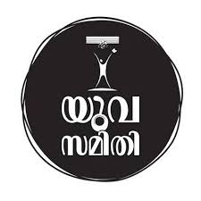
KSSP · Yuvasamithi
കേരള ശാസ്ത്രസാഹിത്യ പരിഷത്ത് · യുവസമിതി
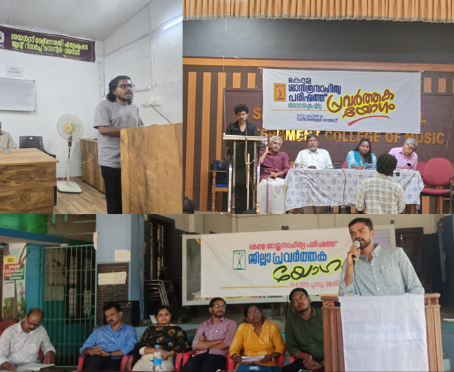
01
നിതിന് നീതിക്കായി
ക്യാമ്പയിൻ
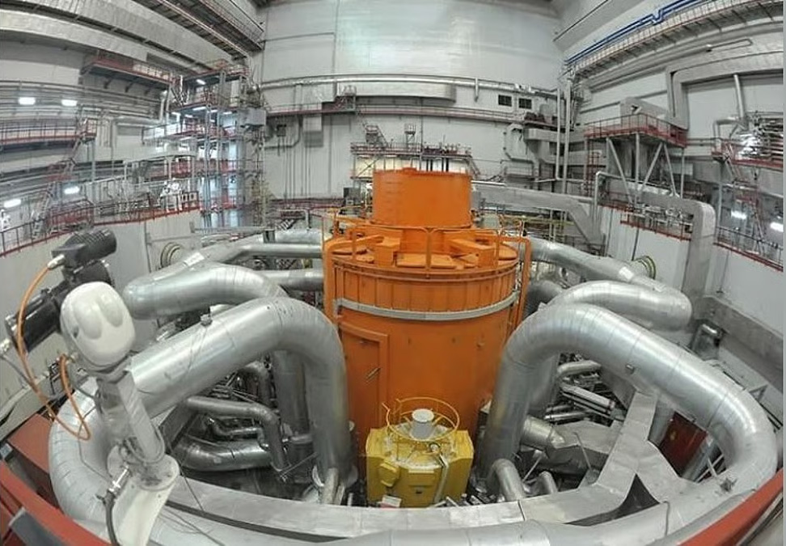
02
ആണവ കരുത്തിൽ
ഇന്ത്യ
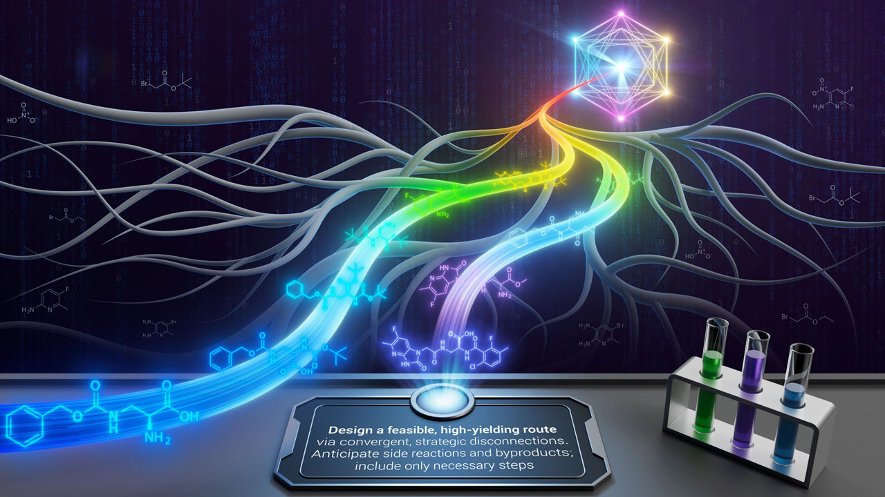
03
ശാസ്ത്ര വാർത്തകൾ
 04
04
മറ്റ് പരിപാടികൾ
Campaign
നിതിന് നീതിക്കായി
Period
ഏപ്രിൽ – മെയ് 2026
2026
Contents
ഈ ലക്കത്തിൽ
- 01
Editorialആണവ കരുത്തിൽ ഇന്ത്യ: കൽപ്പാക്കത്തിന് അപ്പുറം
എഡിറ്റോറിയൽ
- 02
Campaignനിതിന് നീതിക്കായി — ക്യാമ്പസ് ജനാധിപത്യ സംരക്ഷണം
ക്യാമ്പയിൻ
- 03
Campaign · Districtsജില്ലാതല ക്യാമ്പയിൻ റിപ്പോർട്ടുകൾ
ജില്ലകൾ
- 04
Other Programsട്രാൻസ്ജെൻഡർ വെബിനാർ · ട്രക്കിംഗ് · നിഴലില്ലാ ദിനം
പരിപാടികൾ
- 05
Science Newsഈ മാസത്തെ ശ്രദ്ധേയ ശാസ്ത്ര കണ്ടെത്തലുകൾ
ശാസ്ത്രം
- 06
Observance Daysമെയ് മാസത്തെ ശാസ്ത്ര-സാങ്കേതിക ദിനങ്ങൾ
ദിനങ്ങൾ
ഇന്ത്യയുടെ ആണവോർജ്ജ ചരിത്രത്തിലെ സുവർണ്ണ അധ്യായത്തിനാണ് 2026 ഏപ്രിൽ 6-ന് തമിഴ്നാട്ടിലെ കൽപ്പാക്കം സാക്ഷ്യം വഹിച്ചത്. പതിറ്റാണ്ടുകൾ നീണ്ട കാത്തിരിപ്പിനും പരീക്ഷണങ്ങൾക്കും ഒടുവിൽ, 500 മെഗാവാട്ട് ശേഷിയുള്ള പ്രോട്ടോടൈപ്പ് ഫാസ്റ്റ് ബ്രീഡർ റിയാക്ടർ (PFBR) അതിന്റെ ആദ്യ 'ക്രിട്ടിക്കാലിറ്റി' കൈവരിച്ചിരിക്കുന്നു. 'വികസിത് ഭാരതം 2047' എന്ന ലക്ഷ്യത്തിലേക്കും 'നെറ്റ് സീറോ' കാർബൺ ബഹിർഗമന ലക്ഷ്യത്തിലേക്കും ഇന്ത്യ നടത്തുന്ന നിർണ്ണായകമായ ചുവടുവെപ്പാണിത്. കൽപ്പാക്കത്തെ വിജയം നൽകുന്ന ആത്മവിശ്വാസത്തിൽ, ഊർജ്ജ സ്വതന്ത്രമായ ഒരു ഭാവിയിലേക്ക് ഇന്ത്യ ചുവടുവെക്കുന്നു.
⚛
Editorial · എഡിറ്റോറിയൽ
ആണവ കരുത്തിൽ ഇന്ത്യ:
കൽപ്പാക്കത്തിന് അപ്പുറം ലക്ഷ്യമിടേണ്ടത്
ഇന്ത്യയുടെ ആണവോർജ്ജ ചരിത്രത്തിലെ സുവർണ്ണ അധ്യായത്തിനാണ് 2026 ഏപ്രിൽ 6-ന് തമിഴ്നാട്ടിലെ കൽപ്പാക്കം സാക്ഷ്യം വഹിച്ചത്. പതിറ്റാണ്ടുകൾ നീണ്ട കാത്തിരിപ്പിനും പരീക്ഷണങ്ങൾക്കും ഒടുവിൽ, 500 മെഗാവാട്ട് ശേഷിയുള്ള പ്രോട്ടോടൈപ്പ് ഫാസ്റ്റ് ബ്രീഡർ റിയാക്ടർ (PFBR) അതിന്റെ ആദ്യ 'ക്രിട്ടിക്കാലിറ്റി' കൈവരിച്ചിരിക്കുന്നു. ഇത് കേവലം ഒരു സാങ്കേതിക നേട്ടം മാത്രമല്ല, മറിച്ച് 'വികസിത് ഭാരതം 2047' എന്ന ലക്ഷ്യത്തിലേക്കും 2070-ഓടെയുള്ള 'നെറ്റ് സീറോ' (Net Zero) കാർബൺ ബഹിർഗമന ലക്ഷ്യത്തിലേക്കും ഇന്ത്യ നടത്തുന്ന നിർണ്ണായകമായ ചുവടുവെപ്പാണ്.
ഡോ. ഹോമി ജഹാംഗീർ ഭാഭ വിഭാവനം ചെയ്ത ത്രിതല ആണവ പദ്ധതിയുടെ (Three-Stage Nuclear Power Programme) രണ്ടാം ഘട്ടത്തിലേക്കുള്ള ഇന്ത്യയുടെ ഔദ്യോഗിക പ്രവേശനമാണിത്. പരിമിതമായ യുറേനിയം നിക്ഷേപത്തെ ആശ്രയിക്കുന്നതിന് പകരം, ഇന്ത്യയിലുള്ള വൻതോതിലുള്ള തോറിയം നിക്ഷേപത്തെ ഇന്ധനമാക്കി മാറ്റുക എന്ന ദീർഘവീക്ഷണമാണ് ഈ പദ്ധതിയുടെ അടിസ്ഥാനം. കൽപ്പാക്കത്തെ റിയാക്ടർ പ്രവർത്തനക്ഷമമാകുന്നതോടെ, ഉപയോഗിക്കുന്ന ഇന്ധനത്തേക്കാൾ കൂടുതൽ ഇന്ധനം ഉത്പാദിപ്പിക്കുന്ന (Breeding) സാങ്കേതികവിദ്യ കൈവരിച്ച ലോകത്തിലെ രണ്ടാമത്തെ രാജ്യമായി ഇന്ത്യ മാറും.
എങ്കിലും, ഈ പാത അത്ര സുഗമമല്ല. ക്രിട്ടിക്കാലിറ്റി കൈവരിച്ചതിന് ശേഷമുള്ള ഘട്ടങ്ങൾ ഏറെ വെല്ലുവിളികൾ നിറഞ്ഞതാണ്. തോറിയം ഇന്ധനത്തിൽ നിന്ന് യുറേനിയം-233 വേർതിരിച്ചെടുക്കുന്ന പ്രക്രിയയിലെ റേഡിയോ ആക്ടിവിറ്റി വെല്ലുവിളികളും, ഫാസ്റ്റ് ബ്രീഡർ റിയാക്ടറുകളുടെ വാണിജ്യാടിസ്ഥാനത്തിലുള്ള പ്രവർത്തനം ഉറപ്പാക്കലും വരും വർഷങ്ങളിൽ ശാസ്ത്രലോകം നേരിടേണ്ടി വരുന്ന വലിയ പരീക്ഷണങ്ങളാണ്.
ഇന്നത്തെ മാറുന്ന ആഗോള സാഹചര്യത്തിൽ ഇന്ത്യയുടെ ആണവ നയം കൂടുതൽ വഴക്കമുള്ളതാകേണ്ടതുണ്ട് (Flexible approach). 1974-ലെ ആണവ പരീക്ഷണത്തിന് ശേഷം ഇന്ത്യ നേരിട്ട ഉപരോധങ്ങൾ 2008-ലെ സിവിൽ ആണവ കരാറോടെ അവസാനിച്ചു. ഇപ്പോൾ 18 രാജ്യങ്ങളുമായി ഇന്ത്യക്ക് ആണവ സഹകരണമുണ്ട്. ഇത് യുറേനിയം ലഭ്യതയെക്കുറിച്ചുള്ള ആശങ്കകൾ ഒരു പരിധിവരെ പരിഹരിച്ചിട്ടുണ്ട്. എങ്കിലും, അന്താരാഷ്ട്ര ഊർജ്ജ വിപണിയിലെ അസ്ഥിരതയും ഭൗമരാഷ്ട്രീയ തർക്കങ്ങളും കണക്കിലെടുക്കുമ്പോൾ 'ക്ലോസ്ഡ് ഫ്യൂവൽ സൈക്കിൾ' (Closed Fuel Cycle) വഴി ഊർജ്ജ പരമാധികാരം നേടിയെടുക്കുക എന്നത് ഇന്ത്യയുടെ ദീർഘകാല താല്പര്യങ്ങൾക്ക് അനിവാര്യമാണ്.
സമീപകാലത്ത് ഇന്ത്യ സ്വീകരിച്ച 'ആണവോർജ്ജ മിഷൻ', 2025-ലെ 'ശാന്തി' (Sustainable Harnessing and Advancement of Nuclear Energy for Transforming India - SHANTI) നിയമം ആണവ മേഖലയിൽ സ്വകാര്യ പങ്കാളിത്തം ഉറപ്പാക്കാനും ചെറുകിട റിയാക്ടറുകൾ (SMRs) വികസിപ്പിക്കാനും സഹായകമായി. ലാർസൺ ആൻഡ് ട്യൂബ്രോ, ഗോദ്റെജ് തുടങ്ങിയ സ്വകാര്യ സ്ഥാപനങ്ങൾ കൽപ്പാക്കത്തെ ദൗത്യത്തിൽ നൽകിയ സംഭാവനകൾ ഈ മാറ്റത്തിന് കരുത്തേകുന്നു.
ഇന്ത്യയുടെ മുന്നിലുള്ള വഴി സന്തുലിതമാകണം. ഹ്രസ്വകാലത്തേക്ക് നിലവിലുള്ള റിയാക്ടറുകളിൽ നിന്നും (PHWRs), ഇറക്കുമതി ചെയ്യുന്ന സാങ്കേതികവിദ്യയിൽ നിന്നും ഊർജ്ജോത്പാദനം വർദ്ധിപ്പിക്കണം. അതേസമയം, 2070-ലെ ലക്ഷ്യങ്ങൾ കൈവരിക്കാൻ തോറിയം അധിഷ്ഠിത പദ്ധതിയെന്ന ദീർഘകാല ലക്ഷ്യത്തിൽ ഉറച്ചുനിൽക്കുകയും വേണം. കൽപ്പാക്കത്തെ വിജയം നൽകുന്ന ആത്മവിശ്വാസത്തിൽ, ആധുനിക സാങ്കേതികവിദ്യകളെയും രാജ്യാന്തര സഹകരണത്തെയും കോർത്തിണക്കി വേണം ഇന്ത്യ ഊർജ്ജ സ്വതന്ത്രമായ ഒരു ഭാവിയിലേക്ക് ചുവടുവെക്കാൻ.
നിതിന് നീതിയ്ക്കായി —
ക്യാമ്പസ് ജനാധിപത്യ അവകാശ സംരക്ഷണം
▸ KSSP Yuvasamithi State Campaign · April–May 2026
"വിദ്യാലയങ്ങൾ വിമോചനത്തിനുള്ള ഇടമാകണമെന്ന ഡോ. ബി.ആർ. അംബേദ്കറുടെ ദർശനങ്ങൾ അട്ടിമറിക്കപ്പെടുന്നിടത്താണ് 'രോഹിത് വെമുല ബില്ല്' നാം ഗൗരവമായി ചർച്ച ചെയ്യേണ്ടത്."
ഈ സാഹചര്യം ഒരു പതിറ്റാണ്ട് മുൻപ് ഹൈദരാബാദ് സെൻട്രൽ യൂണിവേഴ്സിറ്റിയിൽ രോഹിത് വെമുല നേരിട്ട പോരാട്ടങ്ങളിലേക്കും അദ്ദേഹത്തിന്റെ അന്ത്യത്തിലേക്കും നമ്മുടെ ശ്രദ്ധ തിരിക്കുന്നു. രോഹിത് വെമുലയുടെ മരണം അന്ന് രാജ്യവ്യാപകമായി കലാലയങ്ങളിലെ ജാതി വിവേചനത്തെക്കുറിച്ചുള്ള ഗൗരവതരമായ സംവാദങ്ങൾക്ക് തുടക്കമിട്ടെങ്കിലും, വർഷങ്ങൾക്കിപ്പുറവും ആ ദുരന്തങ്ങൾ ആവർത്തിക്കപ്പെടുകയാണ്. നിതിൻ രാജുമാർക്ക് നേരിടേണ്ടി വന്ന അദൃശ്യവും സൂക്ഷ്മവുമായ വിവേചനങ്ങൾ തടയുന്നതിനും, വിദ്യാഭ്യാസ സ്ഥാപനങ്ങളെ ജാതിരഹിതവും സുരക്ഷിതവുമായ ഇടങ്ങളായി മാറ്റുന്നതിനും കർണാടക മാതൃകയിലുള്ള ഈ ബില്ല് നിയമമാക്കേണ്ടത് കേരളത്തിലും അനിവാര്യമായിരിക്കുന്നു.
ദേശീയ തലത്തിലുള്ള കണക്കുകൾ ഈ പ്രതിസന്ധിയുടെ ആഴം വ്യക്തമാക്കുന്നു. ഐഐടി, ഐഐഎം, എൻഐടി തുടങ്ങിയ പ്രമുഖ ഉന്നത വിദ്യാഭ്യാസ സ്ഥാപനങ്ങളിൽ 2014-2021 കാലയളവിൽ റിപ്പോർട്ട് ചെയ്യപ്പെട്ട 122 ആത്മഹത്യകളിൽ പകുതിയിലധികവും (68 പേർ) സംവരണ വിഭാഗങ്ങളിൽ നിന്നുള്ളവരായിരുന്നു. 2023-ൽ പാർലമെന്റിൽ സമർപ്പിച്ച കണക്കുകൾ പ്രകാരം കഴിഞ്ഞ അഞ്ച് വർഷത്തിനിടയിൽ 13,500-ലധികം എസ്സി/എസ്ടി/ഒബിസി വിദ്യാർത്ഥികൾക്ക് പഠനം പാതിവഴിയിൽ ഉപേക്ഷിക്കേണ്ടി വന്നു.
എമിൽ ദുർഖൈം വിശദീകരിക്കുന്ന 'ഈഗോയിസ്റ്റിക്', 'ഫേറ്റലിസ്റ്റിക്' ആത്മഹത്യകളുടെ പശ്ചാത്തലത്തിൽ പരിശോധിച്ചാൽ, ജാതി മുൻവിധികളാൽ പാർശ്വവൽക്കരിക്കപ്പെടുന്ന വിദ്യാർത്ഥികൾ അനുഭവിക്കുന്ന ഒറ്റപ്പെടലും സ്വന്തം ഭാവി മാറ്റാൻ കഴിയില്ലെന്ന നിരാശയുമാണ് അവരെ ഇത്തരമൊരു കടുത്ത തീരുമാനത്തിലേക്ക് നയിക്കുന്നത് എന്ന് കാണാം.
ആധുനികമെന്ന് അവകാശപ്പെടുന്ന ലിബറൽ സ്ഥാപനങ്ങളിൽപ്പോലും ഭക്ഷണശാലകളിലെ വിവേചനം, അധ്യാപകരുടെ ജാതീയമായ പരാമർശങ്ങൾ, മതിയായ പ്രാതിനിധ്യമില്ലായ്മ, കുടുംബപ്പേര് ചോദിച്ചുള്ള മാറ്റിനിർത്തലുകൾ തുടങ്ങിയ അതിസൂക്ഷ്മമായ വിവേചനങ്ങൾ ഇന്നും നിലനിൽക്കുന്നുണ്ട്. നിലവിലുള്ള 1989-ലെ എസ്സി/എസ്ടി പീഡന നിരോധന നിയമം പ്രത്യക്ഷമായ അക്രമങ്ങളെ നേരിടാൻ സഹായിക്കുമെങ്കിലും, ക്യാമ്പസുകളിൽ നിത്യേന സംഭവിക്കുന്ന ഇത്തരം മാനസിക പീഡനങ്ങളെയും അദൃശ്യമായ വിവേചനങ്ങളെയും അഭിസംബോധന ചെയ്യുന്നതിൽ പലപ്പോഴും പരാജയപ്പെടുന്നു. 2012-ലെ യുജിസി മാർഗ്ഗനിർദ്ദേശങ്ങളുടെ അവ്യക്തത ഈ സാഹചര്യം കൂടുതൽ വഷളാക്കുന്നു. അതിനാൽ തന്നെ, ഉന്നത വിദ്യാഭ്യാസ മേഖലയിലെ ഈ സൂക്ഷ്മ വിവേചനങ്ങൾ തടയുന്നതിനും കുറ്റക്കാർക്കെതിരെ കൃത്യമായ നടപടികൾ ഉറപ്പാക്കുന്നതിനും പുതിയൊരു നിയമനിർമ്മാണം അത്യന്താപേക്ഷിതമാണ്.
നിയമനിർമ്മാണങ്ങൾക്കൊപ്പം തന്നെ പ്രധാനമാണ് ഈ വിഷയത്തിലുള്ള ശക്തമായ ബഹുജന ബോധവൽക്കരണം. കലാലയങ്ങൾക്കുള്ളിൽ നടക്കുന്ന ഇത്തരം അനീതികൾ പലപ്പോഴും 'അക്കാദമിക് അച്ചടക്കം' എന്ന പേരിൽ മൂടിവെക്കപ്പെടുകയാണ് പതിവ്. സമൂഹത്തിന്റെ പൊതുബോധത്തിൽ ഉറച്ചുപോയ ജാതീയമായ മുൻവിധികളെ തിരുത്താനും വിവേചനരഹിതമായ ഒരു വിദ്യാഭ്യാസ സംസ്കാരം വളർത്തിയെടുക്കാനും നിരന്തരമായ സംവാദങ്ങളും ഇടപെടലുകളും ആവശ്യമാണ്. നിശബ്ദമാക്കപ്പെടുന്ന ശബ്ദങ്ങൾക്ക് കരുത്തുപകരാനും, ജനാധിപത്യപരമായ ക്യാമ്പസ് അന്തരീക്ഷം ഉറപ്പുവരുത്താനും പൊതുസമൂഹം ഉണർന്നു പ്രവർത്തിക്കേണ്ടതുണ്ട്. ഇത്തരം വ്യവസ്ഥാപിത അനീതികളെ ചോദ്യം ചെയ്യാനുള്ള ആർജ്ജവം വിദ്യാർത്ഥികളിലും അധ്യാപകരിലും പൊതുജനങ്ങളിലും വളർത്തിയെടുക്കുക എന്നതാണ് ഈ ക്യാമ്പയിന്റെ പ്രാഥമിക ലക്ഷ്യം. ഇതിനായി കേരള ശാസ്ത്രസാഹിത്യ പരിഷത്ത് യുവസമിതി നടത്തുന്ന ഈ പോരാട്ടത്തിൽ നമുക്ക് ഏവർക്കും അണിചേരാം.
District Campaigns · ജില്ലാ റിപ്പോർട്ടുകൾ
ഏപ്രിൽ 19 — ജില്ലാ ക്യാമ്പുകൾ
ഏപ്രിൽ 19നു നടന്ന ശാസ്ത്രസാഹിത്യ പരിഷത്ത് ജില്ലാ ക്യാമ്പുകളിൽ ക്യാമ്പസുകളിൽ ദളിത്-പിന്നോക്ക വിഭാഗങ്ങൾ നേരിടുന്ന വിവേചനങ്ങൾ തടയുന്നതിനായി 'രോഹിത് വെമുല ബില്ല്' നടപ്പിലാക്കണമെന്ന് ആവശ്യപ്പെട്ടുകൊണ്ടും അഞ്ചരക്കണ്ടി മെഡിക്കൽ കോളേജ് വിദ്യാർത്ഥി നിതിൻ രാജിന്റെ മരണത്തിന് ഉത്തരവാദികളായവരെ ഉടൻ അറസ്റ്റ് ചെയ്യണമെന്ന് ആവശ്യപ്പെട്ടും യുവസമിതി പ്രവർത്തകർ പ്രതിഷേധം രേഖപ്പെടുത്തി. തിരുവനന്തപുരം ജില്ലാ യുവസമിതി കൺവീനർ അശ്വതി ആർ.എസ്., ആലപ്പുഴ ജില്ലാ യുവസമിതി കൺവീനർ ജയചന്ദ്രൻ, മലപ്പുറം ജില്ലാ യുവസമിതി കൺവീനർ ജയ് സോമനാഥ്, വയനാട് ജില്ലാ യുവസമിതി കൺവീനർ അശ്വിൻ എന്നിവർ വിവിധ ജില്ലാ പ്രവർത്തക ക്യാമ്പുകളിൽ വിഷയങ്ങൾ അവതരിപ്പിച്ചു സംസാരിച്ചു. ഉന്നത വിദ്യാഭ്യാസ മേഖലയിലെ ജാതി വിവേചനങ്ങൾക്കെതിരെ ശക്തമായ നിയമനിർമ്മാണം അനിവാര്യമാണെന്നും നിതിൻ രാജിന്റെ കുടുംബത്തിന് നീതി ഉറപ്പാക്കാൻ സർക്കാർ അടിയന്തരമായി ഇടപെടണമെന്നും യോഗങ്ങൾ ആവശ്യപ്പെട്ടു. കണ്ണൂർ ജില്ലാ പ്രവർത്തക ക്യാമ്പിലും നിതിൻ രാജിന്റെ മരണവുമായി ബന്ധപ്പെട്ട് ശക്തമായ പ്രതിഷേധം രേഖപ്പെടുത്തി.
തൃശ്ശൂർ
കേരള ശാസ്ത്രസാഹിത്യ പരിഷത്ത് തൃശ്ശൂർ ജില്ലാ യുവസമിതിയുടെ ആഭിമുഖ്യത്തിൽ നിതിന് നീതിക്കായി- ക്യാമ്പസ് ജനാധിപത്യ അവകാശ സംരക്ഷണ സദസ്സ് സംഘടിപ്പിച്ചു. ഏപ്രിൽ 30 വ്യാഴാഴ്ച വൈകുന്നേരം 5 മണിക്ക് തൃശ്ശൂർ ഇ.എം.എസ് സ്ക്വയറിൽ നടന്ന പരിപാടി പ്രശസ്ത കവി അൻവർ അലി ഉദ്ഘാടനം ചെയ്തു. പാസീവ് കമ്മ്യൂണലിസത്തിന്റെ വിഷവേരുകൾ മറനീക്കി പുറത്തുവരുന്ന കാലത്താണ് നാം ജീവിക്കുന്നതെന്ന് അദ്ദേഹം അഭിപ്രായപ്പെട്ടു. നവോത്ഥാന മൂല്യങ്ങൾ ഇപ്പോഴും സമൂഹത്തിലെ ഏറ്റവും കീഴാള തലങ്ങളിലേക്ക് എത്തിയിട്ടില്ലെന്നും, ദളിത്-ആദിവാസി-ട്രാൻസ്ജെൻഡർ വിഭാഗങ്ങളും മുസ്ലീം ജനവിഭാഗങ്ങളും അങ്ങേയറ്റത്തെ അരക്ഷിതാവസ്ഥയിലാണ് കഴിയുന്നതെന്നും അദ്ദേഹം കൂട്ടിച്ചേർത്തു. ജില്ലാ പ്രസിഡന്റ് ഡോ. സി.എൽ. ജോഷി അധ്യക്ഷത വഹിച്ച ചടങ്ങിൽ സംസ്ഥാന ജനറൽ സെക്രട്ടറി വി. മനോജ് കുമാർ, ക്യാമ്പസ് ശാസ്ത്ര സമിതി കേരളവർമ്മ കോളേജ് രക്ഷാധികാരി ഫസീല തരകത്ത്, ഡോ. നീരജ, ജില്ലാ സെക്രട്ടറി കെ.കെ. കസീമ, യുവസമിതി ചെയർപേഴ്സൺ സുധീർ കെ.എസ്, കൺവീനർ അജീഷ് കെ.എ എന്നിവർ സംസാരിച്ചു. തുടർന്ന് സുധീഷ് അമ്മവീട് അവതരിപ്പിച്ച 'ജയ് ഭീം' എന്ന ഏകപാത്ര നാടകവും വേദിയിൽ അരങ്ങേറി.
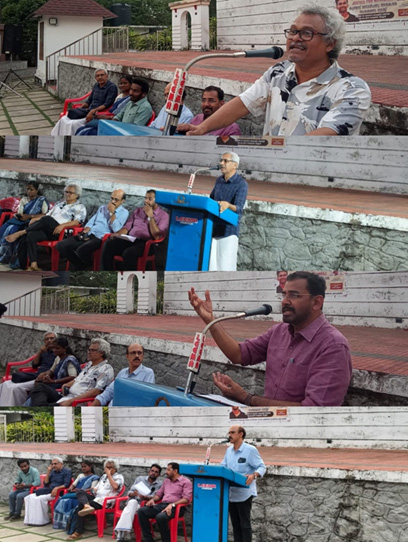
കാര്യവട്ടം
കേരള ശാസ്ത്രസാഹിത്യ പരിഷത്ത് കാര്യവട്ടം ക്യാമ്പസ് യൂണിറ്റ്, ക്യാമ്പസ് ശാസ്ത്രസമിതി, ജില്ലാ യുവസമിതി എന്നിവയുടെ സംയുക്താഭിമുഖ്യത്തിൽ 'നിതിന് നീതിക്കായി' ക്യാമ്പസ് ജനാധിപത്യ സംരക്ഷണ സദസ്സ് സംഘടിപ്പിച്ചു. ഏപ്രിൽ 24 വെള്ളിയാഴ്ച വൈകുന്നേരം 5 മണിക്ക് നടന്ന സദസ്സിൽ കേരള യൂണിവേഴ്സിറ്റി പൊളിറ്റിക്കൽ സയൻസ് ഡിപ്പാർട്ട്മെന്റ് പ്രൊഫസർ ഡോ. ഷാജി വർക്കി മുഖ്യപ്രഭാഷണം നടത്തി. ഇന്ത്യയിലെ ഉന്നതവിദ്യാഭ്യാസ സ്ഥാപനങ്ങളിൽ ദളിത്-പിന്നോക്ക വിഭാഗങ്ങൾ നേരിടുന്ന വിവേചനങ്ങളും വെല്ലുവിളികളും ചർച്ച ചെയ്ത അദ്ദേഹം, രോഹിത് വെമുല ബില്ലിന്റെ പ്രസക്തിയെക്കുറിച്ചും സംസാരിച്ചു.
വിദ്യാർത്ഥികൾ തങ്ങളുടെ ക്യാമ്പസ് അനുഭവങ്ങൾ പങ്കുവെച്ച ചടങ്ങിൽ സംസ്ഥാന യുവസമിതി കൺവീനർ ഡോ. റസീന എൻ.ആർ., യൂണിറ്റ് സെക്രട്ടറി നിതിൻ വി.എസ്., യുവസമിതി ജില്ലാ ചെയർപേഴ്സൺ അഭിജിത് ആർ., ജില്ലാ കൗൺസിൽ അംഗം അരവിന്ദ് എന്നിവർ സംസാരിച്ചു. പരിപാടിയുടെ ഭാഗമായി വിദ്യാർത്ഥികളുടെ ഒപ്പുകൾ ശേഖരിച്ചുകൊണ്ട് സിഗ്നേച്ചർ ക്യാമ്പയിനും സംഘടിപ്പിച്ചു.
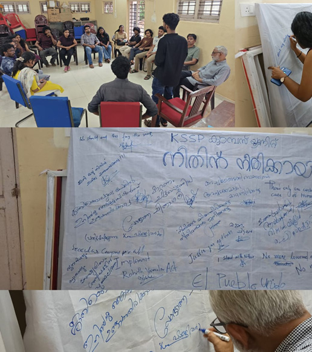
നേമം
കേരള ശാസ്ത്രസാഹിത്യ തിരുവനന്തപുരം ജില്ലാ യുവസമിതി, വിദ്യാർത്ഥി യൂണിയൻ എന്നിവരുടെ സംയുക്താഭിമുഖ്യത്തിൽ 'നിതിന് നീതിക്കായി' ക്യാമ്പസ് ജനാധിപത്യ സംരക്ഷണ സദസ്സ് സംഘടിപ്പിച്ചു. ഏപ്രിൽ 23 വ്യാഴാഴ്ച വൈകുന്നേരം 3 മണിക്ക് നേമം, ശ്രീ വിദ്യാരാജ ഫർമസി കോളേജിൽ നടന്ന പരിപാടിയിൽ യുവസമിതി ജില്ലാ ചെയർപേഴ്സൺ അഭിജിത് ആർ., ജില്ലാ കൗൺസിൽ അംഗം അരവിന്ദ് എന്നിവർ സംസാരിച്ചു. പരിപാടിയുടെ ഭാഗമായി വിദ്യാർത്ഥികളുടെ ഒപ്പുകൾ ശേഖരിച്ചുകൊണ്ട് സിഗ്നേച്ചർ ക്യാമ്പയിനും സംഘടിപ്പിച്ചു.
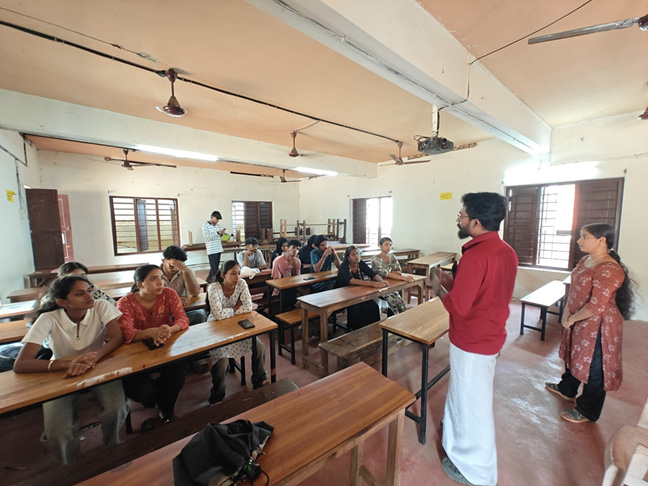
കണ്ണൂർ
അഞ്ചരക്കണ്ടി മെഡിക്കൽ കോളേജ് വിദ്യാർത്ഥി നിതിൻ രാജിന്റെ മരണം സമൂഹത്തിൽ നിലനിൽക്കുന്ന ജാതി മേൽക്കോയ്മയുടെ ഇരയാക്കപ്പെട്ടുള്ള 'സ്ഥാപനവത്കൃത കൊലപാതകം' ആണെന്ന് പ്രശസ്ത സാംസ്കാരിക പ്രവർത്തകൻ കെ.ഇ.എൻ. കേരള ശാസ്ത്രസാഹിത്യ പരിഷത്ത് കണ്ണൂർ മഹാത്മാ മന്ദിരത്തിൽ സംഘടിപ്പിച്ച 'ക്യാമ്പസ് ജനാധിപത്യ സംരക്ഷണ സദസ്സ്' ഉദ്ഘാടനം ചെയ്യുകയായിരുന്നു അദ്ദേഹം. നമ്മുടെ ഉന്നതവിദ്യാഭ്യാസ സ്ഥാപനങ്ങളിൽ എത്രയോ വിദ്യാർത്ഥികൾ ഇന്നും അരക്ഷിതാവസ്ഥയും ഭയവുമാണ് നേരിടുന്നത്. ഇതിന് പരിഹാരം ക്യാമ്പസുകളെ ജനാധിപത്യവത്കരിക്കുക എന്നത് മാത്രമാണെന്നും അദ്ദേഹം പറഞ്ഞു. ജാതി വിവേചനത്തെ അഭിമുഖീകരിക്കാതെ ഇന്ത്യയിൽ സാമൂഹികമോ സാമ്പത്തികമോ ആയ വളർച്ച സാധ്യമല്ലെന്ന ഡോ. അംബേദ്കറുടെ വാക്കുകളെ അദ്ദേഹം അനുസ്മരിച്ചു.
ചടങ്ങിൽ കണ്ണൂർ സർവ്വകലാശാലാ പ്രതിനിധി ഡോ. മാളവിക ബിന്നി മുഖ്യപ്രഭാഷണം നടത്തി. ദളിത് വിദ്യാർത്ഥികൾ ക്യാമ്പസുകളിൽ അനുഭവിക്കുന്ന യാതനകളുടെ നേർചിത്രമാണ് നിതിൻ രാജിന്റെ മരണമെന്ന് അവർ ചൂണ്ടിക്കാട്ടി. എസ്.സി/എസ്.ടി വിഭാഗത്തിലെ 88 ശതമാനം വിദ്യാർത്ഥികളും ജാതി അധിക്ഷേപം നേരിടുന്നുണ്ടെന്നും 25 ശതമാനത്തോളം പേർ ആത്മഹത്യയെക്കുറിച്ച് ചിന്തിക്കുന്നുണ്ടെന്നും സർവ്വേകൾ വ്യക്തമാക്കുന്നു.
പരിഷത്ത് ജില്ലാ പ്രസിഡന്റ് പി.വി. ജയശ്രീ ടീച്ചർ അധ്യക്ഷത വഹിച്ച ചടങ്ങിൽ നോവലിസ്റ്റ് ആർ. ഉണ്ണി മാധവൻ, ടി. ഗംഗാധരൻ എന്നിവർ സംസാരിച്ചു. 'ക്യാമ്പസിലെ ജനാധിപത്യം' എന്ന വിഷയത്തിൽ നടന്ന സംവാദത്തിൽ ഡോ. ടി.കെ. പ്രസാദ് വിഷയം അവതരിപ്പിച്ചു. കണ്ണൂർ യൂണിവേഴ്സിറ്റി യൂണിയൻ ചെയർമാൻ നന്ദജ് ബാബു, കെ.എസ്.യു ജില്ലാ വൈസ് പ്രസിഡന്റ് അഷിത്ത് അശോകൻ, മെഡിക്കോൺ പ്രതിനിധി കൃഷ്ണപ്രിയ വി.എം, സാങ്കേതം സംസ്ഥാന കമ്മിറ്റി അംഗം രോഷിത് പി.വി, യുവസമിതി ജില്ലാ കൺവീനർ ദീപു ബാലൻ എന്നിവർ സംസാരിച്ചു. എം. ദിവാകരൻ ചർച്ചകൾ ക്രോഡീകരിച്ചു. സംഘാടക സമിതി കൺവീനർ വി.വി. ശ്രീനിവാസൻ സ്വാഗതവും യുവസമിതി ജില്ലാ കൺവീനർ ആനന്ദ് കൈലാസം നന്ദിയും പറഞ്ഞു. പരിഷത്ത് കേന്ദ്ര നിർവാഹകസമിതി അംഗങ്ങളായ ധന്യാറാം, ബാബു പി.പി, ജില്ലാ സെക്രട്ടറി ബിജു നെടുവാലൂർ എന്നിവരടക്കം നിരവധി പേർ പങ്കെടുത്തു. പ്രവീൺ രുഗ്മ നാടൻപാട്ടുകൾ അവതരിപ്പിച്ചു. ചിത്രകാരൻ സലീഷ് ചെറുപുഴ പ്രതിരോധ ചിത്രരചന നിർവഹിച്ചു. ജാതി-മത-വർണ്ണ വിവേചനങ്ങൾക്കെതിരെ മാനവിക ഐക്യം കെട്ടിപ്പടുക്കാൻ ആഹ്വാനം ചെയ്തുകൊണ്ടാണ് സംരക്ഷണ സദസ്സ് സമാപിച്ചത്.
ഡോ. മാളവിക ബിന്നി കണ്ണൂരിൽ നടത്തിയ പ്രസംഗം ↗
കെ ഇ എൻ കണ്ണൂരിൽ നടത്തിയ പ്രസംഗം ↗
തിരുവനന്തപുരം
കേരള ശാസ്ത്രസാഹിത്യ പരിഷത്ത് തിരുവനന്തപുരം ജില്ലാ യുവസമിതിയുടെ ആഭിമുഖ്യത്തിൽ 'നിതിന് നീതിക്കായി' പ്രതിഷേധ സദസ്സ് സംഘടിപ്പിച്ചു. ഏപ്രിൽ 30 വ്യാഴാഴ്ച വൈകുന്നേരം 4:30-ന് മാനവീയം വീഥിയിൽ നടന്ന പരിപാടി പരിഷത്ത് മുൻ സംസ്ഥാന സെക്രട്ടറി കെ.കെ. കൃഷ്ണകുമാർ ഉദ്ഘാടനം ചെയ്തു. ക്യാമ്പസുകളിലെ പിന്നോക്ക വിഭാഗങ്ങൾ നേരിടുന്ന പ്രശ്നങ്ങൾ പഠിക്കുന്നതിനും അവരെ മുഖ്യധാരയിലേക്ക് എത്തിക്കുന്നതിനുമുള്ള ശ്രമങ്ങൾ പൊതുസമൂഹത്തിന്റെ കടമയാണെന്ന് അദ്ദേഹം അഭിപ്രായപ്പെട്ടു. മികച്ചൊരു വിദ്യാർത്ഥി സമൂഹത്തെ വാർത്തെടുക്കാൻ ക്യാമ്പസുകളിൽ വിദ്യാർത്ഥി പ്രസ്ഥാനങ്ങൾ ശക്തിപ്പെടേണ്ടത് അനിവാര്യമാണെന്നും അദ്ദേഹം കൂട്ടിച്ചേർത്തു.
ജില്ലാ പ്രസിഡന്റ് ബി. നാഗപ്പൻ അധ്യക്ഷത വഹിച്ച ചടങ്ങിൽ ജില്ലാ സെക്രട്ടറി അനിൽ നാരായണൻ, സംസ്ഥാന കമ്മിറ്റി അംഗം ബി. രമേശ്, യുവസമിതി സംസ്ഥാന കൺവീനർ ഡോ. റസീന എൻ.ആർ, തിരുവനന്തപുരം ജില്ലാ കൺവീനർ അശ്വതി ആർ.എസ് എന്നിവർ സംസാരിച്ചു. പ്രതിഷേധത്തിന്റെ ഭാഗമായി സംഘടിപ്പിച്ച 'സിഗ്നേച്ചർ വാൾ' ക്യാമ്പയിനിൽ നിരവധി യുവാക്കൾ തങ്ങളുടെ ഒപ്പുകൾ രേഖപ്പെടുത്തി. തുടർന്ന് മാനവീയം വീഥിയിൽ 'നിതിന് നീതിക്കായി' പ്രതിഷേധ ജാഥയും നടന്നു.

മലപ്പുറം
അഞ്ചരക്കണ്ടി മെഡിക്കൽ കോളേജ് വിദ്യാർത്ഥി നിതിൻ രാജിന്റെ മരണത്തിന് ഉത്തരവാദികളായവർക്ക് പരമാവധി ശിക്ഷ ഉറപ്പുവരുത്തണമെന്ന് ആവശ്യപ്പെട്ട് കേരള ശാസ്ത്രസാഹിത്യ പരിഷത്ത് മലപ്പുറം ജില്ലാ കമ്മിറ്റിയുടെയും യുവസമിതിയുടെയും നേതൃത്വത്തിൽ 'ക്യാമ്പസ് ജനാധിപത്യ അവകാശ സംരക്ഷണ സദസ്സ്' സംഘടിപ്പിച്ചു. ഏപ്രിൽ 27-ന് മലപ്പുറം കോട്ടപ്പടിയിൽ നടന്ന പരിപാടി യുവസമിതി ജില്ലാ കൺവീനർ ജയ് സോമനാഥ് ഉദ്ഘാടനം ചെയ്തു.
ജാതിയുടെ പേരിലോ ഇന്റേണൽ മാർക്കിന്റെ പേരിലോ ഒരു വിദ്യാർത്ഥിക്കും ഇനി ഇത്തരം ദുരനുഭവങ്ങൾ ഉണ്ടാകാത്ത വിധം ക്യാമ്പസുകൾ സർഗാത്മകമാകണമെന്നും, വിവേചനങ്ങൾക്കെതിരെ സമൂഹം ഒന്നടങ്കം മുന്നോട്ടുവരണമെന്നും ചടങ്ങിൽ സംസാരിച്ചവർ ആഹ്വാനം ചെയ്തു. മുഹമ്മദ് സിനാൻ, കെ.എ. ഫിദ, ഹരിലാൽ പത്മനാഭൻ, സി.പി. സുരേഷ് ബാബു, വി. രാജലക്ഷ്മി, എൻ. അനൂപ്, സ്മിത എന്നിവർ ചടങ്ങിൽ സംസാരിച്ചു. സദസ്സിനോടനുബന്ധിച്ച് നിതിന് നീതി തേടിക്കൊണ്ട് പ്രതിഷേധ ജാഥയും സംഘടിപ്പിച്ചു.
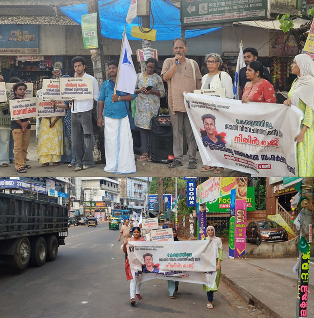
പാലക്കാട്
അഞ്ചരക്കണ്ടി മെഡിക്കൽ കോളേജ് വിദ്യാർത്ഥി നിതിൻ രാജിന്റെ മരണത്തിന് ഉത്തരവാദികളായവർക്ക് പരമാവധി ശിക്ഷ ഉറപ്പുവരുത്തണമെന്ന് ആവശ്യപ്പെട്ട് കേരള ശാസ്ത്രസാഹിത്യ പരിഷത്ത് പാലക്കാട് ജില്ലാ കമ്മിറ്റിയുടെയും യുവസമിതിയുടെയും നേതൃത്വത്തിൽ പ്രതിഷേധ റാലി സംഘടിപ്പിച്ചു. ഏപ്രിൽ 20-ന് പാലക്കാട് നഗരത്തിൽ നടന്ന പ്രതിഷേധ പരിപാടി പരിഷത്ത് സംസ്ഥാന കമ്മിറ്റി അംഗം കെ.എസ്. സുധീർ ഉദ്ഘാടനം ചെയ്തു. ക്യാമ്പസുകളിലെ വിവേചനങ്ങൾക്കും ജനാധിപത്യ വിരുദ്ധതയ്ക്കുമെതിരെ ശക്തമായ ബഹുജന പ്രതിരോധം ഉയരണമെന്ന് ചടങ്ങിൽ ആവശ്യമുയർന്നു. ജില്ലാ പ്രസിഡന്റ് കെ.എസ്. നാരായണൻകുട്ടി അധ്യക്ഷത വഹിച്ച ചടങ്ങിൽ ജില്ലാ സെക്രട്ടറി എം. സുനിൽകുമാർ, സംസ്ഥാന കമ്മിറ്റി അംഗം കെ. അരവിന്ദാക്ഷൻ, ജില്ലാ കമ്മിറ്റി അംഗം മുഹമ്മദ് മൂസ എന്നിവർ സംസാരിച്ചു.
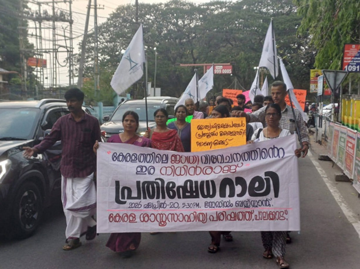
ആലപ്പുഴ
അഞ്ചരക്കണ്ടി മെഡിക്കൽ കോളേജ് വിദ്യാർത്ഥി നിതിൻ രാജിന്റെ മരണത്തിന് ഉത്തരവാദികളായവർക്കെതിരെ കർശന നടപടി സ്വീകരിക്കണമെന്നും അവർക്ക് പരമാവധി ശിക്ഷ ഉറപ്പുവരുത്തണമെന്നും ആവശ്യപ്പെട്ട് കേരള ശാസ്ത്രസാഹിത്യ പരിഷത്ത് ആലപ്പുഴ ജില്ലാ കമ്മിറ്റിയുടെയും യുവസമിതിയുടെയും നേതൃത്വത്തിൽ പ്രതിഷേധ റാലി സംഘടിപ്പിച്ചു. ഏപ്രിൽ 19-ന് പുന്നപ്രയിൽ വെച്ചാണ് പ്രതിഷേധ പരിപാടി നടന്നത്. പുന്നപ്രയിൽ നടന്നുവന്ന പരിഷത്ത് ജില്ലാ പ്രവർത്തക ക്യാമ്പിലെ പ്രതിനിധികൾ പ്രതിഷേധ റാലിയിൽ പങ്കുചേർന്നു.
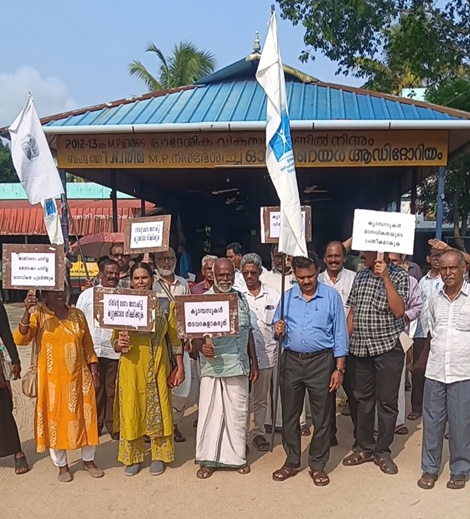
കോഴിക്കോട്
കലാലയങ്ങളിൽ ജാതിയുടെയും മറ്റും പേരിലുള്ള വിവേചനങ്ങൾ അവസാനിപ്പിക്കണമെന്നും വിദ്യാർത്ഥികൾക്ക് ഭയരഹിതമായി പഠിക്കാനും സർഗ്ഗാത്മക കഴിവുകൾ വളർത്തിയെടുക്കാനുമുള്ള സാഹചര്യം ഒരുക്കാൻ ബഹുജനശബ്ദം ഉയരണമെന്നും ആവശ്യപ്പെട്ട് കേരള ശാസ്ത്രസാഹിത്യ പരിഷത്തും യുവസമിതിയും ചേർന്ന് കോഴിക്കോട് പരിഷദ് ഭവനിൽ 'ജനാധിപത്യ അവകാശ സംരക്ഷണ സദസ്സ്' സംഘടിപ്പിച്ചു. പരിഷത്ത് ജില്ലാ സെക്രട്ടറി പി. ബിജു അധ്യക്ഷത വഹിച്ച ചടങ്ങിൽ യുവസമിതി ജില്ലാ കൺവീനർ അശ്വിൻ ഇല്ലത്ത് സ്വാഗതം ആശംസിച്ചു. പരിഷത്ത് മുൻ കേന്ദ്രനിർവാഹക സമിതി അംഗം സി.പി. ഹരീന്ദ്രൻ മാസ്റ്റർ, മനുഷ്യാവകാശ പ്രവർത്തകനും ഗവേഷകനുമായ ദിനു വെയിൽ എന്നിവർ വിഷയങ്ങൾ അവതരിപ്പിച്ചു. നിതിൻ രാജിന്റെ മരണത്തിന് ഉത്തരവാദികളായവർക്ക് ശിക്ഷ ഉറപ്പാക്കണമെന്നും, ഇത്തരം ദാരുണമായ സംഭവങ്ങൾ കലാലയങ്ങളിൽ ആവർത്തിക്കാതിരിക്കാൻ സമൂഹം ജാഗ്രത പാലിക്കണമെന്നും ദിനു വെയിൽ തന്റെ പ്രഭാഷണത്തിൽ ആവശ്യപ്പെട്ടു.
തുടർന്ന് നടന്ന ചർച്ചയിൽ യുവസമിതി പ്രവർത്തകൻ ആദർശ്, പീതാംബരൻ, സംസ്ഥാന സെക്രട്ടറി എസ്. യമുന ടീച്ചർ, ദിനേശ് വർമ്മ എന്നിവർ സംസാരിച്ചു. മുൻ കേന്ദ്രനിർവാഹക സമിതി അംഗം ഡോ. ഹരികുമാരൻ ചർച്ചകൾ ക്രോഡീകരിച്ചു. യുവസമിതി ജില്ലാ ചെയർപേഴ്സൺ ഉണ്ണിമായ പി.ബി നന്ദി രേഖപ്പെടുത്തി. കലാലയങ്ങളിലെ ജനാധിപത്യം തിരിച്ചുപിടിക്കാനും വിവേചനങ്ങൾക്കെതിരെ പോരാടാനുമുള്ള ആഹ്വാനത്തോടെയാണ് സദസ്സ് സമാപിച്ചത്.
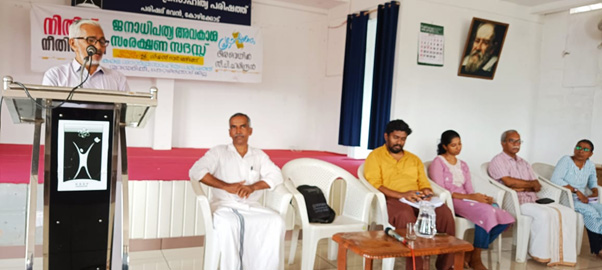
കൊല്ലം
അഞ്ചരക്കണ്ടി മെഡിക്കൽ കോളേജ് വിദ്യാർത്ഥി നിതിൻ രാജിന്റെ മരണത്തിൽ പ്രതിഷേധിച്ചും നീതി ആവശ്യപ്പെട്ടും കേരള ശാസ്ത്രസാഹിത്യ പരിഷത്ത് യുവസമിതി 'ലോ കോൺ' (LawCon) കൊല്ലം ജില്ലാ ഘടകത്തിന്റെ നേതൃത്വത്തിൽ പ്രതിഷേധ സംഗമവും 'Sign for Justice' സിഗ്നേച്ചർ ക്യാമ്പയിനും സംഘടിപ്പിച്ചു. കൊട്ടിയം എൻ.എസ്.എസ്. ലോ കോളേജ് കേന്ദ്രീകരിച്ച് നടന്ന പരിപാടിയിൽ നിരവധി വിദ്യാർത്ഥികൾ പങ്കുചേർന്നു.
ലോ കോൺ സംസ്ഥാന കൺവീനർ അഡ്വ. ജസൽന ജലീൽ പ്രതിഷേധ യോഗം ഉദ്ഘാടനം ചെയ്യുകയും വിദ്യാർത്ഥികൾക്ക് പ്രതിഷേധ ബാഡ്ജുകൾ വിതരണം ചെയ്യുകയും ചെയ്തു. ലോ കോൺ സംസ്ഥാന കമ്മിറ്റി അംഗം അഡ്വ. കൃഷ്ണേന്ദു അധ്യക്ഷത വഹിച്ച ചടങ്ങിൽ ലോ കോളേജ് വിദ്യാർത്ഥി സിദ്ധാർത്ഥ് സ്വാഗതം പറഞ്ഞു. പരിപാടിയുടെ ഭാഗമായി വിദ്യാർത്ഥികൾ പ്രതിഷേധ ബാഡ്ജ് ധരിച്ചും സിഗ്നേച്ചർ വാളിൽ ഒപ്പുവെച്ചും നിതിൻ രാജിന് ഐക്യദാർഢ്യം രേഖപ്പെടുത്തി. ലോ വിദ്യാർത്ഥിനി മീനാക്ഷി ചടങ്ങിൽ നന്ദി പറഞ്ഞു.

കോട്ടയം
അഞ്ചരക്കണ്ടി മെഡിക്കൽ കോളേജ് വിദ്യാർത്ഥി നിതിൻ രാജിന്റെ മരണത്തിൽ നീതി ആവശ്യപ്പെട്ടുകൊണ്ട് കോട്ടയം ജില്ലാ യുവസമിതിയും ദളിത് വിമെൻസ് സൊസൈറ്റിയും സംയുക്തമായി സംവാദ പരിപാടി സംഘടിപ്പിച്ചു. ഏപ്രിൽ 25 ശനിയാഴ്ച വൈകുന്നേരം 3 മണിക്ക് ചങ്ങനാശേരി ഡി.ഡബ്ല്യു.എം (DWM) ഹാളിലായിരുന്നു പരിപാടി. 'നിതിന് നീതിക്കായി കൈകോർക്കാം, ഒത്തുചേരാം' എന്ന മുദ്രാവാക്യമുയർത്തി നടന്ന സംവാദത്തിൽ ഡോ. കിരൺ ആർ., എം.എൻ. മുരളീധരൻ നായർ, അനിത ബാബു, അനുരാഗ് എം. എന്നിവർ സംസാരിച്ചു. കലാലയങ്ങളിലെ വിവേചനങ്ങൾ അവസാനിപ്പിക്കണമെന്നും ജനാധിപത്യപരമായ അന്തരീക്ഷം ഉറപ്പുവരുത്തണമെന്നും ചടങ്ങിൽ പങ്കെടുത്തവർ ആവശ്യപ്പെട്ടു. നിരവധി യുവജനങ്ങളും സാംസ്കാരിക പ്രവർത്തകരും പരിപാടിയിൽ പങ്കുചേർന്ന് ഐക്യദാർഢ്യം പ്രഖ്യാപിച്ചു.
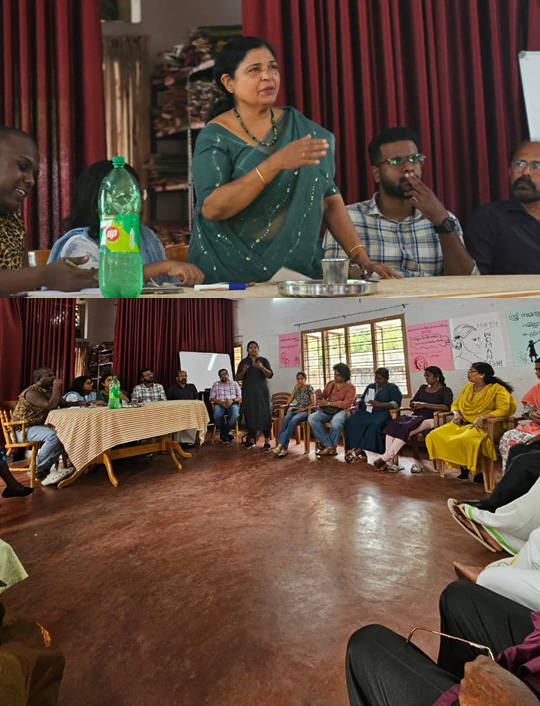
തിരുവല്ല / പത്തനംതിട്ട
കേരള ശാസ്ത്രസാഹിത്യ പരിഷത്ത് യുവസമിതിയുടെ 'നിതിന് നീതിക്കായി' കാമ്പയിന്റെ ഭാഗമായി തിരുവല്ല ഡയറ്റ് ക്യാമ്പസിൽ "സർഗ്ഗാത്മക വിദ്യാഭ്യാസം, ജനാധിപത്യ കലാലയം" എന്ന വിഷയത്തിൽ ഏപ്രിൽ 28നു സംവാദം സംഘടിപ്പിച്ചു. പത്തനംതിട്ട ജില്ലാ യുവസമിതിയുടെയും പരിഷത്ത് തിരുവല്ല മേഖലയുടെ നേതൃത്വത്തിൽ നടന്ന പരിപാടിയിൽ ഡയറ്റ് വിദ്യാർത്ഥികളടക്കം അൻപതോളം യുവജനങ്ങൾ പങ്കെടുത്തു. ഡയറ്റ് വിദ്യാർത്ഥിനി ആയിഷ ഫിദ പരിപാടി ഉദ്ഘാടനം ചെയ്തു. പരിഷത്ത് പത്തനംതിട്ട ജില്ലാ ജോയിന്റ് സെക്രട്ടറി എം.എസ്. പ്രവീൺ ആമുഖാവതരണം നടത്തി.
നിതിൻ രാജ് കൊല്ലപ്പെട്ട സംഭവത്തിൽ യോഗം ശക്തമായ പ്രതിഷേധം രേഖപ്പെടുത്തുകയും കലാലയങ്ങൾ ജനാധിപത്യവത്കരിക്കേണ്ടതിന്റെ ആവശ്യകത ചർച്ച ചെയ്യുകയും ചെയ്തു. ക്യാമ്പസുകളിലെ വിവേചനങ്ങൾക്കെതിരെ ചൂടേറിയ വാദപ്രതിവാദങ്ങളും സംവാദത്തിൽ നടന്നു. പരിഷത്ത് ജില്ലാ സെക്രട്ടറി പി.എസ്. ജീമോൻ, ശാസ്ത്രാവബോധ ഉപസമിതി കൺവീനർ അജിത് ആർ. പിള്ള, തിരുവല്ല മേഖലാ സെക്രട്ടറി ഡോ. ഷീജ, കെ.ജെ. ലിജോ, ജില്ലാ യുവസമിതി അംഗം അശ്വതി തുടങ്ങിയവർ ചർച്ചയിൽ പങ്കെടുത്തു സംസാരിച്ചു. പത്തനംതിട്ട, റാന്നി, മല്ലപ്പള്ളി, അടൂർ തുടങ്ങിയ മേഖലകളിൽ നിന്നുള്ള യുവസമിതി പ്രവർത്തകരും പരിപാടിയിൽ പങ്കുചേർന്നു.
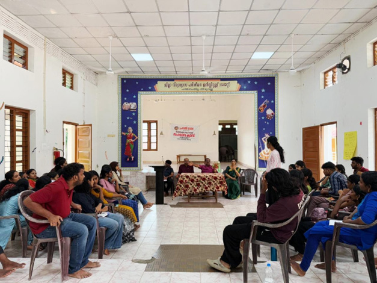
കൊല്ലം — വി-പാർക്ക്
കേരള ശാസ്ത്രസാഹിത്യ പരിഷത്തും പുരോഗമന കലാസാഹിത്യ സംഘം ജില്ലാ കമ്മിറ്റികളും സംയുക്തമായി നിതിൻ രാജിന് നീതി ആവശ്യപ്പെട്ടുകൊണ്ട് കൊല്ലം വി-പാർക്കിൽ "ജനാധിപത്യ അവകാശ സംരക്ഷണ സംഗമം" സംഘടിപ്പിച്ചു. പരിഷത്ത് ജില്ലാ പ്രസിഡന്റ് ഡോ. എസ്. പത്മകുമാറിന്റെ അധ്യക്ഷതയിൽ നടന്ന പ്രതിഷേധ സംഗമത്തിൽ പുകസ ജില്ലാ പ്രസിഡന്റ് ഡോ. സി. ഉണ്ണികൃഷ്ണൻ മുഖ്യപ്രഭാഷണം നടത്തി.
സംഗമത്തിന് മുന്നോടിയായി കൊല്ലം ചിന്നക്കടയിൽ നിന്ന് ആരംഭിച്ച് വി-പാർക്കിൽ സമാപിച്ച പ്രതിഷേധ പ്രകടനത്തിൽ പരിഷത്ത് കലാസംസ്കാരം ജില്ലാ കൺവീനർ ജി. കലാധരൻ, ജില്ലാ കമ്മിറ്റി അംഗങ്ങൾ, പുകസ പ്രവർത്തകർ ഉൾപ്പെടെ നൂറിലധികം പേർ പങ്കെടുത്തു. പരിഷത്ത് കേന്ദ്ര നിർവാഹക സമിതി അംഗം ടി. ലിസി ചടങ്ങിൽ സംസാരിച്ചു. പുകസ ജില്ലാ പ്രസിഡന്റ് ബീന സജീവ് സ്വാഗതവും പരിഷത്ത് ജില്ലാ സെക്രട്ടറി കെ. ശശികുമാർ നന്ദിയും രേഖപ്പെടുത്തി.
തുടർന്ന് പരിഷത്ത് കലാസംസ്കാര ഉപസമിതിയുടെ നേതൃത്വത്തിൽ, മുൻ ജില്ലാ സെക്രട്ടറി വേണു പരവൂർ രചനയും സംവിധാനവും നിർവഹിച്ച "കീഴാളവൃത്തം" എന്ന നാടകം അരങ്ങേറി. പ്രമേയത്തിലെ ആഴം കൊണ്ടും അവതരണശൈലി കൊണ്ടും ശ്രദ്ധേയമായ നാടകത്തിന്റെ കാലികപ്രസക്തിയെക്കുറിച്ച് കേന്ദ്ര നിർവാഹക സമിതി അംഗം കെ. പ്രസാദ് വിശദീകരിച്ചു. കലാലയങ്ങളിലെ ജനാധിപത്യ വിരുദ്ധതയ്ക്കും ജാതി വിവേചനങ്ങൾക്കുമെതിരെയുള്ള ശക്തമായ പ്രതിഷേധമായി ഈ സംഗമം മാറി.
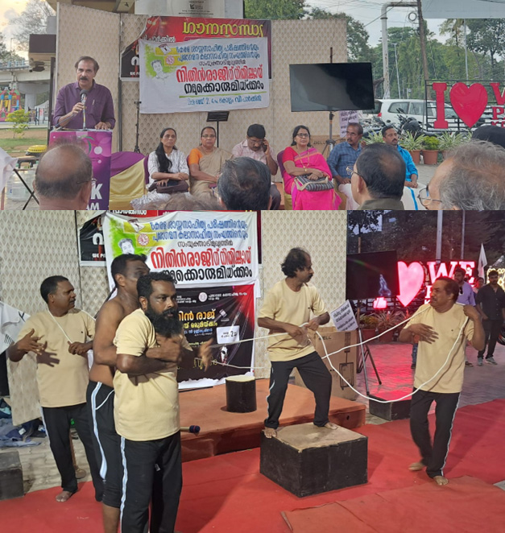
വയനാട്
കേരള ശാസ്ത്ര സാഹിത്യ പരിഷത്ത് വയനാട് യുവസമിതി 'നിതിന് നീതിക്കായി' എന്ന മുദ്രാവാക്യമുയർത്തി കൽപ്പറ്റ അമ്പിലേരിയിൽ സംഘടിപ്പിച്ച പ്രതിഷേധ സദസ്സിൽ സിഗ്നേച്ചർ ക്യാമ്പയിനും ജാതീയതയെ സംബന്ധിച്ച ചർച്ചയും നടന്നു. കേരളീയ സമൂഹത്തിൽ ഇന്നും ആഴത്തിൽ വേരൂന്നിയിരിക്കുന്ന ജാതീയ ചിന്താഗതികൾ ഉന്നത വിദ്യാഭ്യാസ മേഖലയെപ്പോലും എത്രത്തോളം ദോഷകരമായി ബാധിക്കുന്നു എന്നതിന്റെ തെളിവാണ് നിതിൻ രാജിന്റെ ദാരുണമായ അന്ത്യമെന്ന് ചർച്ചയിൽ പങ്കെടുത്തവർ ചൂണ്ടിക്കാട്ടി. ഇത്തരം വിവേചനങ്ങൾ അവസാനിപ്പിക്കാനും ക്യാമ്പസുകളിൽ ഭരണഘടനാ മൂല്യങ്ങളും ജനാധിപത്യപരമായ അന്തരീക്ഷവും ഉറപ്പുവരുത്താനും പൊതുസമൂഹം മുന്നോട്ടുവരണമെന്ന് യുവസമിതി ആവശ്യപ്പെട്ടു. പരിഷത്ത് കേന്ദ്ര നിർവാഹക സമിതി അംഗം കെ.എ. അഭിജിത്ത്, യുവസമിതി ജില്ലാ കൺവീനർ അശ്വിൻ ജോസഫ് ടി.ടി, ജില്ലാ എക്സിക്യൂട്ടീവ് അംഗം രാഹുൽ രാജ്, കൽപ്പറ്റ മേഖലാ സെക്രട്ടറി എം.പി. മത്തായി എന്നിവർ സംസാരിച്ചു. വിദ്യാർത്ഥികളെ മാനസികമായും സാമൂഹികമായും തളർത്തുന്ന വിവേചനപരമായ നയങ്ങൾക്കെതിരെ വരുംദിവസങ്ങളിലും ക്യാമ്പയിൻ ശക്തമായി തുടരുമെന്ന് സംഘാടകർ അറിയിച്ചു.
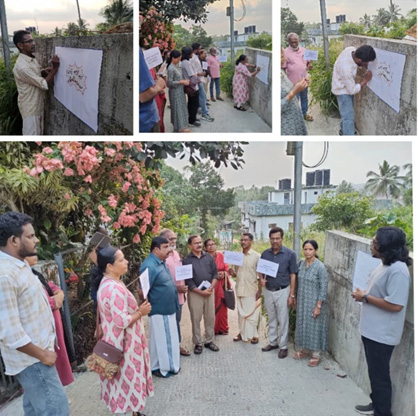
ട്രാൻസ്ജെൻഡർ അവകാശ ഭേദഗതി ബിൽ വെബിനാർ
കൽപ്പറ്റ: കേരള ശാസ്ത്ര സാഹിത്യ പരിഷത്ത് വയനാട് യുവസമിതിയുടെ ആഭിമുഖ്യത്തിൽ ട്രാൻസ്ജെൻഡർ നിയമ ഭേദഗതി ബില്ലിലെ മാനുഷിക അവകാശ ലംഘനങ്ങളെ മുൻനിർത്തി 'അവകാശത്തിന്റെ നിഷേധം; ട്രാൻസ്ജെൻഡർ ഭേദഗതി ബിൽ ഒരു വായന' എന്ന പേരിൽ ഏപ്രിൽ 4നു വെബിനാർ സംഘടിപ്പിച്ചു. യുവസമിതി സംസ്ഥാന ചെയർപേഴ്സൺ എം ദിവാകരൻ ഉദ്ഘാടനം ചെയ്തു. കേരള ഹൈ കോടതി അഭിഭാഷകനായ അഡ്വ. ടി ലജിത് കോട്ടക്കൽ വിഷയവതരിപ്പിച്ചു. 2026ൽ നിലവിൽ വന്ന ബിൽ അവകാശ ലംഘനവും അശാസ്ത്രീയവുമാണന്ന് അദ്ദേഹം അഭിപ്രായപ്പെട്ടു. യുവസമിതി ജില്ലാ കൺവീനർ ടി ടി അശ്വിൻ ജോസഫ് അധ്യക്ഷനായി. വയനാട് യുവസമിതിയുടെ ലോകോൺ കൺവീനർ കെ എം പ്രതീഷ് സ്വാഗതവും പരിഷത്ത് കേന്ദ്ര നിർവാഹകസമിതി അംഗം കെ എ അഭിജിത്ത് നന്ദിയും പറഞ്ഞു.
പീക്ക് പർസ്യൂട്ട് ട്രക്കിംഗ്
മുട്ടിൽ: കേരള ശാസ്ത്ര സാഹിത്യ പരിഷത്ത് വയനാട് യുവസമിതിയുടെ നേതൃത്വത്തിൽ ഏപ്രിൽ ഒന്നിന് മുട്ടിൽമലയിലേക്ക് ട്രക്കിങ് നടത്തി. തൃക്കൈപ്പറ്റയിൽ നിന്നും ആരംഭിച്ച യാത്രയിൽ 15 പേർ പങ്കെടുത്തു. പ്രകൃതി സൗന്ദര്യ ആസ്വാദനവും ചരിത്രാന്വേഷണവും 'ഉയരങ്ങളിലേക്ക് ഒരുമയോടെ' എന്ന ആശയത്തിൽ നടത്തിയ യാത്രയുടെ ലക്ഷ്യങ്ങൾ ആയിരുന്നു. ട്രാൻസിറ്റ് വാക്കിന്റെ ഭാഗമായി പരിഷത്ത് കേന്ദ്ര നിർവാഹക സമിതി അംഗം കെ എ അഭിജിത്ത്, ജില്ലാ ജോയിന്റ് കൺവീനർ സി എസ് കോമളം, യുവസമിതി ജില്ലാ കൺവീനർ ടി ടി അശ്വിൻ ജോസഫ്, ജില്ലാ ബാലവേദി കൺവീനർ ശാലിനി തങ്കച്ചൻ, ജില്ലാ കമ്മിറ്റി അംഗം കെ എസ് പ്രഭാകുമാരി, മേഖലാ പ്രസിഡന്റ് രാജൻ തരിപ്പിലോട്ട്, കൽപ്പറ്റ മേഖലാ സെക്രട്ടറി എം പി മത്തായി എന്നിവർ വിവിധ വിഷയങ്ങളിൽ സംസാരിച്ചു.

നിഴലില്ലാത്ത ദിനം: ബാലവേദി പ്രവർത്തകർക്കായി ജില്ലാതല പരിശീലനം
തിരുവനന്തപുരം: സൂര്യൻ തലയ്ക്കുനേരെ മുകളിൽ വരുന്ന 'നിഴലില്ലാത്ത ദിന'ത്തിൽ (Zero Shadow Day) പ്രാദേശിക ഉച്ചസമയം കണ്ടെത്തുന്നത് സംബന്ധിച്ച് ബാലവേദി പ്രവർത്തകർക്കായി തിരുവനന്തപുരം ജില്ലാ യുവസമിതി പരിശീലന പരിപാടി സംഘടിപ്പിച്ചു. ഏപ്രിൽ 11, 12 തീയതികളിൽ തിരുവനന്തപുരത്ത് പ്രതിഭാസം അനുഭവപ്പെടുന്നതിന്റെ പശ്ചാത്തലത്തിൽ ഏപ്രിൽ 10 വെള്ളിയാഴ്ച രാത്രി 8 മണിക്ക് ഓൺലൈനായാണ് ക്ലാസ് നടന്നത്.
അസ്ട്രോണമി പ്രവർത്തകനും ലൂക്ക എഡിറ്റോറിയൽ ബോർഡ് അംഗവുമായ എൻ. സാനു പരിശീലനത്തിന് നേതൃത്വം നൽകി. ഓരോ പ്രദേശത്തും സൂര്യൻ കൃത്യം തലയ്ക്കു മുകളിൽ വരുന്ന സമയം ശാസ്ത്രീയമായി കണ്ടെത്തുന്നതിനുള്ള രീതികൾ അദ്ദേഹം വിശദീകരിച്ചു. ജില്ലയിലെ വിവിധ ബാലവേദികളിൽ നിന്നുള്ള നിരവധി പ്രവർത്തകർ പരിശീലനത്തിൽ പങ്കെടുത്തു.
സാനു മാഷോടൊപ്പം പ്രാദേശിക ഉച്ച കണ്ടെത്തി ബാലവേദി കൂട്ടുകാർ
തിരുവനന്തപുരം: സൂര്യൻ തലയ്ക്കുനേരെ മുകളിൽ വരുന്ന 'നിഴലില്ലാത്ത ദിന'ത്തിന്റെ (Zero Shadow Day) ഭാഗമായി പ്രാദേശിക ഉച്ചസമയം കണ്ടെത്തി വിക്രം സാരാഭായി ബാലവേദിയിലെ കുട്ടികൾ. ഏപ്രിൽ 11-ന് ഉച്ചയ്ക്ക് 12:25-നാണ് സൂര്യൻ തലയ്ക്കു മുകളിൽ എത്തുന്നതെന്നും നിഴലുകൾ അപ്രത്യക്ഷമാകുന്നതെന്നും ശാസ്ത്രീയ നിരീക്ഷണത്തിലൂടെ കുട്ടികൾ കണ്ടെത്തി. കരമന നെടുങ്ങാട് ഗവൺമെന്റ് സ്കൂളിൽ വെച്ചാണ് ഈ അപൂർവ്വ പ്രതിഭാസം നിരീക്ഷിക്കാനുള്ള പരിപാടി സംഘടിപ്പിച്ചത്.
അസ്ട്രോണമി പ്രവർത്തകനും 'ലൂക്ക' എഡിറ്റോറിയൽ ബോർഡ് അംഗവുമായ എൻ. സാനു മാഷിനൊപ്പമാണ് കുട്ടികൾ നിഴലില്ലാ ദിനം ആഘോഷിച്ചത്. ഈ പ്രതിഭാസത്തിന്റെ ശാസ്ത്രീയ വശങ്ങളെക്കുറിച്ച് അദ്ദേഹം കുട്ടികളോട് വിശദീകരിച്ചു. തിരുവനന്തപുരം ജില്ലാ യുവസമിതി കൺവീനർ അശ്വതി ആർ.എസ്, ചെയർപേഴ്സൺ അഭിജിത് ആർ, യുവസമിതി സംസ്ഥാന കൺവീനർ ഡോ. റസീന എൻ.ആർ എന്നിവർ പരിപാടിയിൽ പങ്കെടുത്തു.
ക്വാണ്ടം സെഞ്ച്വറി എക്സിബിഷൻ എക്സ്പ്ലൈനർമാരുടെ സംഗമം
മലപ്പുറം: ക്വാണ്ടം സെഞ്ച്വറി എക്സിബിഷന്റെ ഭാഗമായി പ്രവർത്തിച്ച എക്സ്പ്ലൈനർമാരുടെയും യുവസമിതി പ്രവർത്തകരുടെയും സംഗമം ഏപ്രിൽ 27-ന് മലപ്പുറം പരിഷത്ത് ഭവനിൽ വെച്ച് നടന്നു. എക്സിബിഷൻ കാലയളവിലെ അനുഭവങ്ങൾ പങ്കുവെക്കാനും തുടർപ്രവർത്തനങ്ങൾ ചർച്ച ചെയ്യാനുമായാണ് മീറ്റ്അപ്പ് സംഘടിപ്പിച്ചത്.
കാലിക്കറ്റ് യൂണിവേഴ്സിറ്റി റിട്ടയേർഡ് പ്രൊഫസറും പ്രമുഖ പരിഷത്ത് പ്രവർത്തകനുമായ ഡോ. പി. മുഹമ്മദ് ഷാഫി സംഗമത്തിൽ പങ്കെടുത്ത് കുട്ടികളുമായി സംവദിച്ചു. ജില്ലയിലെ വിവിധ ഭാഗങ്ങളിൽ നിന്നുള്ള നിരവധി എക്സ്പ്ലൈനർമാരും യുവസമിതി പ്രവർത്തകരും പരിപാടിയിൽ പങ്കെടുത്തു.

Science News · ശാസ്ത്ര വാർത്തകൾ
പുതിയ മരുന്നുകളും നൂതന പദാർത്ഥങ്ങളും വികസിപ്പിച്ചെടുക്കുന്ന പ്രക്രിയയിൽ രസതന്ത്രലോകം നേരിടുന്ന ഏറ്റവും വലിയ വെല്ലുവിളിയാണ് സങ്കീർണ്ണമായ തന്മാത്രകളുടെ നിർമ്മാണം. ഈ പ്രതിസന്ധിക്ക് പരിഹാരവുമായി എത്തിയിരിക്കുകയാണ് സ്വിറ്റ്സർലൻഡിലെ ഇപിഎഫ്എൽ (EPFL) സർവ്വകലാശാലയിലെ ഗവേഷകർ. ഒരു പ്രൊഫഷണൽ കെമിസ്റ്റിനെപ്പോലെ തന്ത്രപരമായി ചിന്തിക്കാനും രാസപ്രവർത്തനങ്ങളെ വിശകലനം ചെയ്യാനും ശേഷിയുള്ള 'സിന്തജി' (Synthegy) എന്ന പുതിയ ആർട്ടിഫിഷ്യൽ ഇന്റലിജൻസ് ഫ്രെയിംവർക്കാണ് ഇവർ വികസിപ്പിച്ചെടുത്തിരിക്കുന്നത്.
സാധാരണ കമ്പ്യൂട്ടർ പ്രോഗ്രാമുകൾക്ക് അസാധ്യമായ 'റിട്രോസിന്തസിസ്' (Retrosynthesis) പോലുള്ള സങ്കീർണ്ണമായ ഘട്ടങ്ങളെ ലളിതമാക്കാൻ സിന്തജിയിലൂടെ സാധിക്കും. അതായത്, ഒരു തന്മാത്ര നിർമ്മിക്കാൻ ആവശ്യമായ ലളിതമായ അസംസ്കൃത വസ്തുക്കളും അവയുടെ രാസപ്രവർത്തന പാതകളും 'പിന്നോട്ട് ചിന്തിച്ച്' (Backward Reasoning) കണ്ടെത്താൻ ഈ എഐ സഹായിക്കുന്നു. ലാർജ് ലാംഗ്വേജ് മോഡലുകളെ (LLMs) കേവലം വിവരങ്ങൾ നൽകാനല്ല, മറിച്ച് ഒരു വിദഗ്ദ്ധനെപ്പോലെ കാര്യകാരണങ്ങൾ വിലയിരുത്താനാണ് ഇവിടെ ഉപയോഗിച്ചിരിക്കുന്നത്.
സാധാരണ ഗതിയിൽ രാസപ്രവർത്തനങ്ങൾ ആസൂത്രണം ചെയ്യുമ്പോൾ ഉണ്ടാകുന്ന ലക്ഷക്കണക്കിന് സാധ്യതകളിൽ നിന്ന് ഏറ്റവും പ്രായോഗികമായവ തിരഞ്ഞെടുക്കാൻ ഈ സംവിധാനത്തിന് പ്രത്യേക കഴിവുണ്ട്. ശാസ്ത്രജ്ഞർക്ക് ലളിതമായ ഭാഷയിൽ തന്നെ നിർദ്ദേശങ്ങൾ നൽകാം എന്നുള്ളതാണ് ഇതിന്റെ മറ്റൊരു പ്രത്യേകത. ഉദാഹരണത്തിന്, ഒരു പ്രത്യേക രാസവലയം (Ring) നിർമ്മാണത്തിന്റെ തുടക്കത്തിൽ തന്നെ വേണമെന്ന് ആവശ്യപ്പെട്ടാൽ, ലഭ്യമായ എല്ലാ പാതകളെയും വിശകലനം ചെയ്ത് ഏറ്റവും അനുയോജ്യമായവ മാത്രം സിന്തജി മുന്നോട്ട് വെക്കും.
രാസപ്രവർത്തനങ്ങളിലെ ഇലക്ട്രോണുകളുടെ ചലനം നിരീക്ഷിച്ച് അവയുടെ കൃത്യമായ രീതി (Mechanism) മനസ്സിലാക്കാനും ഈ എഐ ഫ്രെയിംവർക്കിന് സാധിക്കും. വിദഗ്ദ്ധരായ രസതന്ത്രജ്ഞർക്കിടയിൽ നടത്തിയ Double-blind study 71 ശതമാനത്തിലധികം കൃത്യതയാണ് ഈ മോഡൽ പ്രകടിപ്പിച്ചത്. അനാവശ്യമായ സുരക്ഷാ ഘട്ടങ്ങൾ ഒഴിവാക്കാനും രാസപ്രവർത്തനങ്ങളുടെ കാര്യക്ഷമത വർദ്ധിപ്പിക്കാനും ഇതിലൂടെ സാധിക്കുമെന്ന് ഗവേഷകനായ ആന്ദ്രേസ് എം ബ്രാൻ അഭിപ്രായപ്പെടുന്നു. ഭാവിയിൽ മരുന്ന് നിർമ്മാണവും പുതിയ പദാർത്ഥങ്ങളുടെ കണ്ടുപിടുത്തവും വേഗത്തിലാക്കാൻ സിന്തജി വലിയൊരു മുതൽക്കൂട്ടാകുമെന്ന് ഉറപ്പാണ്.
Reference: Lauren N. Carnevale, Piu Banerjee, Xu Zhang, Jazmin Navarro, Charlene K Raspur, Parth Patel, Tomohiro Nakamura, Emily Schahrer, Henry Scott, Nhi Lang, Jolene K. Diedrich, Amanda J. Roberts, John R. Yates and Stuart A. Lipton, 23 April 2026, Cell Chemical Biology.
DOI: 10.1016/j.chembiol.2026.03.017
ലോകപ്രശസ്തമായ ഗ്രാൻഡ് കാന്യോണിലൂടെ ഒഴുകുന്ന കൊളറാഡോ നദിക്ക് പിന്നിൽ ദശലക്ഷക്കണക്കിന് വർഷം നീളുന്ന നിഗൂഢമായ ഒരു ചരിത്രമുണ്ടെന്ന് പുതിയ പഠനങ്ങൾ വെളിപ്പെടുത്തുന്നു. ഏകദേശം 1.1 കോടി വർഷങ്ങൾക്ക് മുൻപ് ഈ മേഖലയിൽ നദി നിലനിന്നിരുന്നെങ്കിലും, പിന്നീട് അഞ്ച് ദശലക്ഷം വർഷത്തോളം നദി എങ്ങോട്ട് പോയി എന്നത് ശാസ്ത്രലോകത്തിന് മുന്നിലെ വലിയൊരു ചോദ്യചിഹ്നമായിരുന്നു. എന്നാൽ, ഈ കാണാതായ കാലഘട്ടത്തിൽ നദി ഒരു കൂറ്റൻ ഉൾനാടൻ തടാകത്തിലേക്കാണ് ഒഴുകിയിരുന്നതെന്ന് ഗവേഷകർ ഇപ്പോൾ കണ്ടെത്തിയിരിക്കുന്നു.
യുസിഎൽഎ (UCLA) ഗവേഷകനായ ജോൺ ഹെ-യുടെ നേതൃത്വത്തിൽ നടന്ന പഠനമനുസരിച്ച്, നദി ഇന്നത്തെ ഗ്രാൻഡ് കാന്യോണിലേക്ക് വഴിമാറുന്നതിന് മുൻപ് ലക്ഷക്കണക്കിന് വർഷം ഒരു വലിയ തടാകമായി കെട്ടിക്കിടക്കുകയായിരുന്നു. ഇന്നത്തെ നവാജോ നേഷൻ പ്രദേശത്ത് നിലനിന്നിരുന്ന 'ബിഡാഹോച്ചി' (Bidahochi) എന്ന പുരാതന തടാകത്തിലേക്കായിരുന്നു അക്കാലത്ത് നദി ചെന്നെത്തിയിരുന്നത്. പിൽക്കാലത്ത് ഈ തടാകം കരകവിഞ്ഞൊഴുകുകയും പുതിയ വഴികൾ വെട്ടിത്തെളിക്കുകയും ചെയ്തതോടെയാണ് ഇന്നത്തെ രീതിയിലുള്ള കൊളറാഡോ നദിയും പ്രൗഢഗംഭീരമായ ഗ്രാൻഡ് കാന്യോണും രൂപപ്പെട്ടത്.
നദിയിലെ മണലിൽ അടങ്ങിയിരിക്കുന്ന സിർക്കോൺ (Zircon) എന്ന ധാതുക്കളുടെ വിശകലനത്തിലൂടെയാണ് ശാസ്ത്രജ്ഞർ ഈ നിഗമനത്തിൽ എത്തിച്ചേർന്നത്. പ്രകൃതിയിലെ കുഞ്ഞു 'സമയപ്പേടകങ്ങൾ' എന്ന് വിളിക്കാവുന്ന ഈ ധാതുക്കൾക്ക് അവയുടെ ഉത്ഭവത്തെക്കുറിച്ചുള്ള വിവരങ്ങൾ ദശലക്ഷക്കണക്കിന് വർഷം കേടുപാടുകൾ കൂടാതെ സംരക്ഷിക്കാൻ കഴിയും. ഇതിനുപുറമെ, അക്കാലത്ത് തടാകത്തിൽ ജീവിച്ചിരുന്ന കൂറ്റൻ മത്സ്യങ്ങളുടെ ഫോസിലുകളും ഈ പുതിയ സിദ്ധാന്തത്തെ ശരിവെക്കുന്നു.
ഈ ഭൂമിശാസ്ത്രപരമായ മാറ്റം കൊളറാഡോ നദിയെ ഒരു ഭൂഖണ്ഡാന്തര നദിയാക്കി മാറ്റുക മാത്രമല്ല, പടിഞ്ഞാറൻ അമേരിക്കയിലെ മുഴുവൻ ആവാസവ്യവസ്ഥയെയും പുനർനിർമ്മിക്കുകയും ചെയ്തു. ഗ്രാൻഡ് കാന്യോൺ എങ്ങനെ രൂപപ്പെട്ടു എന്ന കാര്യത്തിൽ ദശാബ്ദങ്ങളായി നിലനിന്നിരുന്ന തർക്കങ്ങൾക്ക് വലിയൊരു ഉത്തരമാണ് ഈ പുതിയ കണ്ടെത്തൽ നൽകുന്നത്. നമുക്ക് പരിചിതമായ പ്രകൃതിദത്ത അത്ഭുതങ്ങൾ രൂപപ്പെടുന്നതിന് പിന്നിൽ പ്രകൃതി നടത്തുന്ന ദീർഘമായ പരീക്ഷണങ്ങളുടെ കഥയാണ് ഈ പഠനം പങ്കുവെക്കുന്നത്.
Reference: John J. Y. He, Ryan S. Crow, John Douglass, Christopher S. Holm-Denoma, Jorge A. Vazquez, Brian F. Gootee, Marsha I. Lidzbarski, Laura S. Pianowski, Harrison Gray, Emma Heitmann, Phil A. Pearthree, P. Kyle House and Shannon Dulin, 16 April 2026, Science.
DOI: 10.1126/science.adz6826
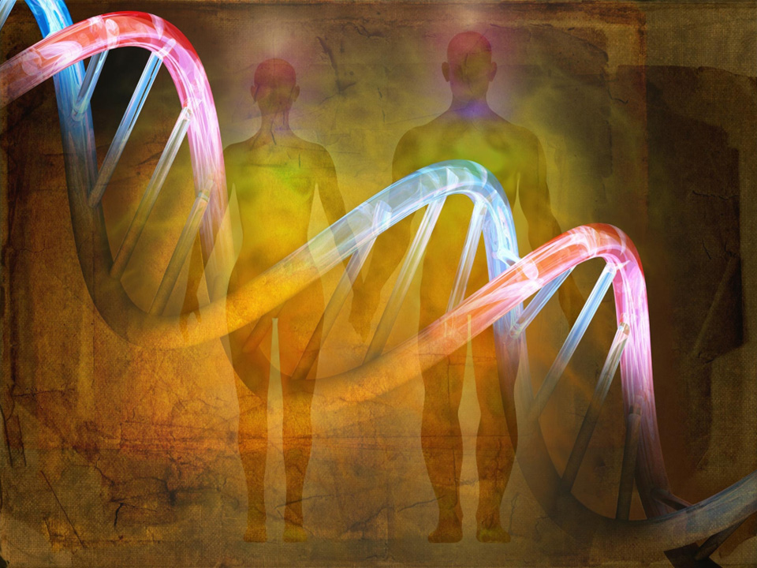
മനുഷ്യവംശത്തിന്റെ പരിണാമം ലക്ഷക്കണക്കിന് വർഷങ്ങൾക്ക് മുൻപ് അവസാനിച്ച ഒന്നല്ല, മറിച്ച് അടുത്തകാലം വരെ നമ്മുടെ ശരീരത്തിൽ മാറ്റങ്ങൾ സംഭവിച്ചുകൊണ്ടിരുന്നു എന്ന് പുതിയ പഠനങ്ങൾ തെളിയിക്കുന്നു. അലി അക്ബാരി എന്ന ഗവേഷകൻ വികസിപ്പിച്ചെടുത്ത അത്യാധുനിക സാങ്കേതികവിദ്യ ഉപയോഗിച്ച്, പശ്ചിമ യുറേഷ്യൻ ജനതയുടെ ജനിതകഘടനയിൽ വന്ന മാറ്റങ്ങളെക്കുറിച്ചാണ് ശാസ്ത്രജ്ഞർ പഠനം നടത്തിയത്. കുടിയേറ്റം, ജനസംഖ്യാ വ്യതിയാനം തുടങ്ങിയ ഘടകങ്ങളെ മാറ്റിനിർത്തി, പ്രകൃതിനിർദ്ധാരണം (Natural Selection) വഴി മാത്രം സംഭവിച്ച മാറ്റങ്ങളെ കൃത്യമായി വേർതിരിച്ചറിയാൻ ഈ പഠനത്തിലൂടെ സാധിച്ചു.
കൃഷി വ്യാപകമായതോടെയാണ് മനുഷ്യന്റെ ജനിതകഘടനയിൽ കാര്യമായ മാറ്റങ്ങൾ കണ്ടുതുടങ്ങിയതെന്ന് ഗവേഷകർ കണ്ടെത്തി. ഭക്ഷണരീതിയിലും ജീവിതസാഹചര്യങ്ങളിലും വന്ന മാറ്റങ്ങൾ പുതിയ പരിണാമ സമ്മർദ്ദങ്ങൾക്ക് കാരണമായി. ഏകദേശം 479 ജനിതക വകഭേദങ്ങളാണ് (Alleles) ഇത്തരത്തിൽ പ്രകൃതി തിരഞ്ഞെടുത്തതായി കണ്ടെത്തിയത്. വെളുത്ത ചർമ്മം, ചുവന്ന മുടി, ചില പ്രത്യേക രക്തഗ്രൂപ്പുകൾ എന്നിവയുമായി ഈ മാറ്റങ്ങൾ ബന്ധപ്പെട്ടിരിക്കുന്നു. കൂടാതെ, കുഷ്ഠരോഗം, എച്ച്.ഐ.വി തുടങ്ങിയവയ്ക്കെതിരെയുള്ള പ്രതിരോധശേഷി നേടിയെടുക്കാനും ഇത്തരം മാറ്റങ്ങൾ സഹായിച്ചു.
ശാരീരികമായ മാറ്റങ്ങൾക്കു പുറമെ, മനുഷ്യന്റെ സ്വഭാവ സവിശേഷതകളിലും പരിണാമം സ്വാധീനം ചെലുത്തിയിട്ടുണ്ട്. വേഗത്തിലുള്ള നടത്തം, ഉയർന്ന ബുദ്ധിശക്തി, കുറഞ്ഞ ശാരീരിക കൊഴുപ്പ് തുടങ്ങിയ ഗുണങ്ങൾ വർദ്ധിപ്പിക്കുന്നതിനും ബൈപോളാർ ഡിസോർഡർ, സ്കീസോഫ്രീനിയ തുടങ്ങിയ രോഗസാധ്യതകൾ കുറയ്ക്കുന്നതിനും ഇത്തരം ജനിതക മാറ്റങ്ങൾ വഴിയൊരുക്കിയതായി പഠനം സൂചിപ്പിക്കുന്നു. മനുഷ്യൻ നേരിട്ട അതിജീവന പോരാട്ടങ്ങളുടെ ബാക്കിപത്രമാണ് നമ്മുടെ ഇന്നത്തെ ജനിതകഘടനയെന്ന് ഇത് വ്യക്തമാക്കുന്നു.
എങ്കിലും ഈ കണ്ടെത്തലുകളെ അതീവ ജാഗ്രതയോടെ വേണം സമീപിക്കാൻ എന്ന് ഗവേഷകർ ഓർമ്മിപ്പിക്കുന്നു. പലപ്പോഴും ഒരു ജീൻ തന്നെ ഒന്നിലധികം ശാരീരിക പ്രത്യേകതകളെ സ്വാധീനിക്കാറുണ്ട്. വരുംകാലങ്ങളിൽ കിഴക്കൻ ഏഷ്യയിലോ ആഫ്രിക്കയിലോ ഉള്ള ജനതയുടെ ജനിതകചരിത്രം കൂടി പഠിക്കുന്നതിലൂടെ മനുഷ്യവർഗ്ഗത്തിന്റെ വൈവിധ്യത്തെക്കുറിച്ചും രോഗപ്രതിരോധ ശേഷിയെക്കുറിച്ചും കൂടുതൽ ആഴത്തിലുള്ള അറിവ് ലഭിക്കുമെന്ന് പഠനത്തിന് നേതൃത്വം നൽകിയ റെയ്ഷ് അഭിപ്രായപ്പെടുന്നു. ജനിതക ചികിത്സകളിലും രോഗനിർണ്ണയത്തിലും വിപ്ലവകരമായ മാറ്റങ്ങൾ കൊണ്ടുവരാൻ ഇത്തരം ഗവേഷണങ്ങൾ ഭാവിയിൽ സഹായിക്കും.
Reference: Ali Akbari, Annabel Perry, Alison R. Barton, Mohammadreza Kariminejad, Steven Gazal, Zheng Li, Yating Zeng, Alissa Mittnik, Nick Patterson, Matthew Mah, Xiang Zhou, Alkes L. Price, Eric S. Lander, Ron Pinhasi, Nadin Rohland, Swapan Mallick and David Reich, 15 April 2026, Nature.
DOI: 10.1038/s41586-026-10358-1
നമ്മുടെ സ്വപ്നങ്ങൾ പലപ്പോഴും വിചിത്രമാണ്. ചിലപ്പോൾ അവ അങ്ങേയറ്റം വ്യക്തവും യാഥാർത്ഥ്യബോധമുള്ളതുമായിരിക്കും എന്നാൽ മറ്റുചിലപ്പോൾ ഒട്ടും പൊരുത്തമില്ലാത്തതും പെട്ടെന്ന് മറന്നുപോകുന്നതുമായി മാറും. എന്തുകൊണ്ടാണ് സ്വപ്നങ്ങളിൽ ഇത്രയേറെ വൈവിധ്യങ്ങൾ സംഭവിക്കുന്നത് എന്ന ചോദ്യത്തിന് ഉത്തരവുമായി എത്തിയിരിക്കുകയാണ് ഇറ്റലിയിലെ ഐഎംടി സ്കൂൾ ഫോർ അഡ്വാൻസ്ഡ് സ്റ്റഡീസിലെ ഗവേഷകർ. നമ്മുടെ വ്യക്തിത്വവും ജീവിതാനുഭവങ്ങളും ഒരുപോലെ സ്വപ്നങ്ങളെ സ്വാധീനിക്കുന്നുണ്ടെന്നാണ് 3,700-ലധികം സ്വപ്നങ്ങളെ ആസ്പദമാക്കി നടത്തിയ ഈ പഠനം വ്യക്തമാക്കുന്നത്.
ആർട്ടിഫിഷ്യൽ ഇന്റലിജൻസിന്റെ (AI) സഹായത്തോടെ നടത്തിയ ഈ വിശകലനത്തിൽ, സ്വപ്നങ്ങൾ കേവലം യാദൃശ്ചികമല്ലെന്ന് ഗവേഷകർ കണ്ടെത്തി. പകരം, ഓരോരുത്തരുടെയും ഉറക്കത്തിന്റെ ഗുണനിലവാരം, ചിന്താഗതികൾ, സ്വപ്നങ്ങളോടുള്ള താൽപ്പര്യം എന്നിവയുമായി അവയ്ക്ക് ആഴത്തിലുള്ള ബന്ധമുണ്ട്. ഉദാഹരണത്തിന്, പകൽ സമയത്ത് അമിതമായി ചിന്താവിഷ്ടരാകുന്നവരുടെ (Mind-wandering) സ്വപ്നങ്ങൾ പലപ്പോഴും മുറിഞ്ഞതും പരസ്പരബന്ധമില്ലാത്തതുമായിരിക്കും. എന്നാൽ സ്വപ്നങ്ങളെ ഗൗരവമായി കാണുന്നവരും അവയ്ക്ക് പ്രാധാന്യം നൽകുന്നവരും കൂടുതൽ വ്യക്തവും സങ്കീർണ്ണവുമായ സ്വപ്നങ്ങൾ കാണാറുണ്ട്. നമ്മുടെ മസ്തിഷ്കം പകൽ അനുഭവങ്ങളെ അതേപടി ആവർത്തിക്കുകയല്ല ചെയ്യുന്നത്. പകരം ഓർമ്മകളെയും സങ്കൽപ്പങ്ങളെയും കോർത്തിണക്കി തികച്ചും പുതിയൊരു ലോകം സൃഷ്ടിക്കുകയാണ് ചെയ്യുന്നത്.
സാമൂഹിക സാഹചര്യങ്ങൾ നമ്മുടെ സ്വപ്നങ്ങളെ എങ്ങനെ മാറ്റുന്നു എന്നതിനും ഈ പഠനത്തിൽ തെളിവുകൾ ലഭിച്ചു. കോവിഡ് ലോക്ക്ഡൗൺ കാലത്തെ സ്വപ്നങ്ങളെ വിശകലനം ചെയ്തപ്പോൾ നിയന്ത്രണങ്ങളും ഒറ്റപ്പെടലുകളുമായിരുന്നു പ്രധാന പ്രമേയങ്ങൾ. എന്നാൽ പിന്നീട് സാധാരണ ജീവിതത്തിലേക്ക് മടങ്ങിയപ്പോൾ സ്വപ്നങ്ങളിലും ആ മാറ്റം പ്രതിഫലിച്ചു. നമ്മൾ ആരാണ് എന്നും എങ്ങനെയുള്ള ജീവിതസാഹചര്യങ്ങളിലൂടെയാണ് കടന്നുപോകുന്നത് എന്നതിന്റെയും കൃത്യമായ പ്രതിഫലനമാണ് ഓരോ സ്വപ്നവുമെന്ന് ഈ ഗവേഷണം അടിവരയിടുന്നു.
മനുഷ്യമനസ്സിന്റെ നിഗൂഢതകൾ അഴിച്ചെടുക്കുന്നതിൽ ആർട്ടിഫിഷ്യൽ ഇന്റലിജൻസ് വലിയ പങ്ക് വഹിക്കുന്നുണ്ടെന്ന് ഈ പഠനം തെളിയിക്കുന്നു. ഭാവിയിൽ ഓർമ്മശക്തിയെക്കുറിച്ചും മാനസികാരോഗ്യത്തെക്കുറിച്ചും കൂടുതൽ ആഴത്തിലുള്ള വിവരങ്ങൾ നൽകാൻ ഇത്തരം സാങ്കേതികവിദ്യകൾ സഹായിക്കും. ചുരുക്കത്തിൽ, ഉറക്കത്തിൽ നാം കാണുന്ന ഓരോ ദൃശ്യവും നമ്മുടെ തന്നെ വ്യക്തിത്വത്തിന്റെ ഡിജിറ്റൽ ഭൂപടങ്ങളാണ്.
Reference: Valentina Elce, Giorgia Bontempi, Serena Scarpelli, Bianca Pedreschi, Pietro Pietrini, Luigi De Gennaro, Michele Bellesi, Giulio Bernardi and Giacomo Handjaras, 28 April 2026, Communications Psychology.
DOI: 10.1038/s44271-026-00447-2
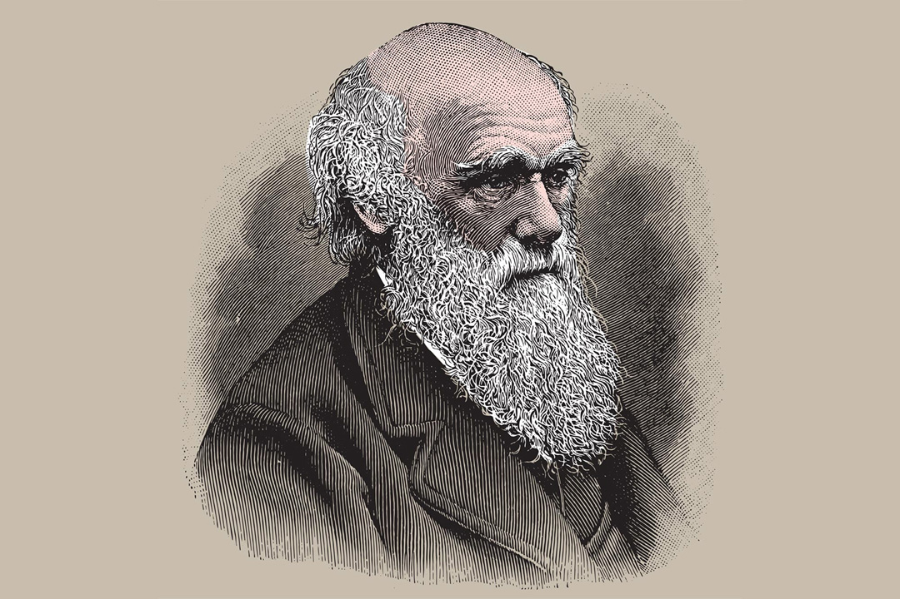
പരിണാമസിദ്ധാന്തത്തിന്റെ ഈറ്റില്ലമെന്ന് വിശേഷിപ്പിക്കപ്പെടുന്ന ഗാലപാഗോസ് ദ്വീപുകൾ ഇന്നും ശാസ്ത്രലോകത്തെ ഞെട്ടിച്ചുകൊണ്ടിരിക്കുകയാണ്. ചാൾസ് ഡാർവിൻ നിരീക്ഷിച്ച ഫിഞ്ച് പക്ഷികളെപ്പോലെ തന്നെ അവിടുത്തെ സസ്യജാലങ്ങളിലും അതിവേഗത്തിലുള്ള പരിണാമം സജീവമായി നടക്കുന്നുണ്ടെന്ന് പുതിയ പഠനങ്ങൾ വെളിപ്പെടുത്തുന്നു. നോർവീജിയൻ യൂണിവേഴ്സിറ്റി ഓഫ് സയൻസ് ആൻഡ് ടെക്നോളജിയിലെ (NTNU) ഗവേഷകർ ഉൾപ്പെട്ട രാജ്യാന്തര സംഘം നടത്തിയ ഈ പഠനം പ്രശസ്ത ശാസ്ത്ര മാസികയായ നേച്ചർ കമ്മ്യൂണിക്കേഷൻസിൽ ആണ് പ്രസിദ്ധീകരിച്ചത്.
ഗാലപാഗോസിലെ 'ഭീമൻ ഡെയ്സികൾ' എന്നറിയപ്പെടുന്ന സ്കെലിസിയ (Scalesia) എന്ന സസ്യവിഭാഗമാണ് ഈ ഗവേഷണത്തിലെ പ്രധാന താരം. ദശലക്ഷം വർഷങ്ങൾക്ക് മുൻപ് ദക്ഷിണ അമേരിക്കയിൽ നിന്ന് ഈ ദ്വീപിലെത്തിയ ഈ ചെടികൾ, വളരെ ചുരുങ്ങിയ കാലയളവിനുള്ളിൽ വൈവിധ്യമാർന്ന രൂപങ്ങളിലേക്ക് പരിണമിച്ചു. വെറും കുറ്റിച്ചെടികളായി തുടങ്ങിയ ഇവ ഇന്ന് വൻമരങ്ങൾ വരെയായി മാറിയിരിക്കുന്നു. ഇവയുടെ ഇലകളിലാണ് ഏറ്റവും അത്ഭുതകരമായ മാറ്റങ്ങൾ പ്രകടമാകുന്നത്. ചൂടിനെ പ്രതിരോധിക്കാനും ജലനഷ്ടം കുറയ്ക്കാനും സഹായിക്കുന്ന 'ലോബ്ഡ്' (Lobed - പിളർപ്പുകളുള്ള) ഇലകൾ വ്യത്യസ്ത ജനിതക വഴികളിലൂടെ സ്വതന്ത്രമായി രൂപപ്പെട്ടു എന്ന് ഗവേഷകർ കണ്ടെത്തി.
ഒരേ ലക്ഷ്യത്തിലേക്ക് പ്രകൃതി വ്യത്യസ്ത ജനിതക വഴികളിലൂടെ സഞ്ചരിക്കുന്ന 'പാരലൽ പരിണാമത്തിന്' (Parallel Evolution) ഉത്തമ ഉദാഹരണമാണ് സ്കെലിസിയ സസ്യങ്ങൾ. ഒരു പ്രത്യേക ജീനിന് പകരം ഒരു കൂട്ടം ജീനുകളുടെ ഏകോപിതമായ പ്രവർത്തനഫലമായാണ് ഇത്തരത്തിലുള്ള സങ്കീർണ്ണമായ മാറ്റങ്ങൾ സംഭവിക്കുന്നത്. ഇന്നും ഈ ചെടികളിൽ പുതിയ വർഗ്ഗങ്ങൾ (Species) രൂപപ്പെട്ടുകൊണ്ടിരിക്കുകയാണെന്ന കണ്ടെത്തൽ ശാസ്ത്രലോകത്തിന് വലിയ പ്രതീക്ഷയാണ് നൽകുന്നത്.
ഓരോ ദ്വീപിലെയും സസ്യങ്ങളെ പ്രത്യേകം സംരക്ഷിക്കേണ്ടത് അനിവാര്യമാണെന്ന് ശാസ്ത്രജ്ഞർ ചൂണ്ടിക്കാട്ടുന്നു. പരിണാമം എന്നത് ദശലക്ഷം വർഷങ്ങൾക്ക് മുൻപ് അവസാനിച്ച ഒരു പ്രക്രിയയല്ല, മറിച്ച് നമ്മുടെ തൊട്ടുമുന്നിൽ ഇന്നും സജീവമായി നടന്നുകൊണ്ടിരിക്കുന്ന ഒന്നാണെന്ന് ഈ കണ്ടെത്തലുകൾ നമ്മെ ഓർമ്മിപ്പിക്കുന്നു. പ്രകൃതിയുടെ ഈ നിരന്തരമായ പരീക്ഷണങ്ങൾ ഭൂമിയുടെ ജൈവവൈവിധ്യത്തെ എത്രത്തോളം സമ്പന്നമാക്കുന്നു എന്നതിന്റെ നേർക്കാഴ്ചയാണ് ഗാലപാഗോസിലെ ഈ ഭീമൻ ഡെയ്സികൾ.
Reference: Vanessa C. Bieker, Siyu Li, José Cerca, Paul Battlay, Mohsen Falahati Anbaran, Amit Sharma, Patricia Jaramillo Díaz, Mario Fernández-Mazuecos, Jazmín Ramos-Madrigal, Sarah L. F. Martin, Luisa Santos-Bay, Gitte Petersen, Ole Seberg, Pablo Vargas, Rasmus Nielsen, M. Thomas P. Gilbert, Gonzalo Rivas-Torres, James Leebens-Mack, Loren H. Rieseberg, Lene R. Nielsen, Neelima Sinha and Michael D. Martin, 16 April 2026, Nature Communications.
DOI: 10.1038/s41467-026-71865-3

പ്രകൃതിയിലെ വിസ്മയകരമായ ജീവിരഹസ്യങ്ങളിൽ ഒന്നാണ് 'പ്രോബോസ്കിസ് അനോൾ' (Proboscis anole) എന്നറിയപ്പെടുന്ന കൊമ്പുള്ള പല്ലികൾ. മൂക്കിന് മുകളിലെ നീളൻ കൊമ്പ് കാരണം 'യൂണിക്കോൺ പല്ലികൾ' എന്ന് വിളിക്കപ്പെടുന്ന ഇവയെ ഏതാണ്ട് വംശനാശം സംഭവിച്ചു എന്നായിരുന്നു ദശാബ്ദങ്ങളായി ശാസ്ത്രലോകം കരുതിയിരുന്നത്. എന്നാൽ പതിറ്റാണ്ടുകൾക്ക് ശേഷം ഇക്വഡോറിലെ കാടുകളിൽ ഇവയെ വീണ്ടും കണ്ടെത്തിയിരിക്കുകയാണ് ഹാർവാർഡ് സർവ്വകലാശാലയിലെയും യൂണിവേഴ്സിറ്റി ഓഫ് ന്യൂ മെക്സിക്കോയിലെയും ഗവേഷകർ.
1966-ന് ശേഷം ആരും തന്നെ ഈ പല്ലികളെ കാട്ടിൽ കണ്ടിരുന്നില്ല. ലോകത്താകെ വെറും ആറ് സാമ്പിളുകൾ മാത്രമായിരുന്നു ഇവയെക്കുറിച്ച് പഠിക്കാൻ ലഭ്യമായിരുന്നത്. എന്നാൽ 2005-ൽ ഒരു വിനോദസഞ്ചാരി ഇന്റർനെറ്റിൽ പോസ്റ്റ് ചെയ്ത ഒരു ചിത്രമാണ് ഈ ജീവി ഇപ്പോഴും ഭൂമിയിലുണ്ടെന്ന സൂചന നൽകിയത്. തുടർന്ന് നടത്തിയ പര്യവേഷണങ്ങളിൽ, ഇവ വിചാരിച്ചതുപോലെ അത്ര അപൂർവ്വമല്ലെന്നും മറിച്ച് കണ്ടെത്താൻ അങ്ങേയറ്റം ബുദ്ധിമുട്ടുള്ളവയുമാണെന്ന് ശാസ്ത്രജ്ഞർ തിരിച്ചറിഞ്ഞു. മരങ്ങളുടെ ഉയർന്ന ശാഖകളിൽ പച്ചപ്പിനിടയിൽ അനങ്ങാതെ കിടക്കുന്ന ഇവയ്ക്ക് പരിസരവുമായി ലയിച്ചുചേരാനുള്ള (Camouflage) അസാമാന്യ കഴിവാണുള്ളത്. അതുകൊണ്ടാണ് 40 വർഷത്തോളം ഇവ ആരുടെയും കണ്ണിൽപ്പെടാതിരുന്നത്.
ഈ വർഗ്ഗത്തിലെ ആൺ പല്ലികൾക്ക് മാത്രമേ കൊമ്പുകളുള്ളൂ എന്ന് പുതിയ പഠനങ്ങൾ തെളിയിക്കുന്നു. സാധാരണയായി പല്ലികളുടെ കൊമ്പുകൾ എല്ലുകൊണ്ട് നിർമ്മിച്ചതും പോരാട്ടത്തിന് ഉപയോഗിക്കുന്നതുമാണ്. എന്നാൽ പ്രോബോസ്കിസ് അനോളുകളുടെ കൊമ്പുകൾ വഴക്കമുള്ളതും ഇളക്കാൻ സാധിക്കുന്നതുമാണ്. ഇത് ഇണയെ ആകർഷിക്കാനായിരിക്കാം ഉപയോഗിക്കുന്നത് എന്നാണ് ഗവേഷകരുടെ നിഗമനം.
കരീബിയൻ ദ്വീപുകളിലെ ചില പല്ലികളുമായി ഇവയ്ക്ക് സാമ്യമുണ്ടെങ്കിലും, അവയിൽ നിന്ന് വ്യത്യസ്തമായി ഇവ എങ്ങനെ പരിണമിച്ചു എന്നത് ശാസ്ത്രലോകത്ത് പുതിയ ചർച്ചകൾക്ക് വഴിതുറന്നിരിക്കുകയാണ്. വംശനാശം സംഭവിച്ചെന്ന് കരുതിയ ഒന്നിന്റെ ഈ തിരിച്ചുവരവ് പരിണാമപഠനങ്ങളിൽ വലിയൊരു കുതിച്ചുചാട്ടമായിട്ടാണ് കണക്കാക്കപ്പെടുന്നത്. വംശനാശത്തിന്റെ വക്കിലെന്ന് കരുതിയിരുന്ന ഒരു ജീവിവർഗ്ഗത്തെ സംരക്ഷിക്കേണ്ടതിന്റെ പ്രാധാന്യത്തിലേക്കും ഈ കണ്ടെത്തൽ വിരൽ ചൂണ്ടുന്നു.

ഭൂമിയിലെ പ്രതികൂല സാഹചര്യങ്ങളെ അതിജീവിക്കാൻ കഴിവുള്ളവരാണ് ഫംഗസുകൾ എന്ന് നമുക്കറിയാം. എന്നാൽ, ഭൂമിയിൽ നിന്നും ചൊവ്വയിലേക്കുള്ള കഠിനമായ ബഹിരാകാശ യാത്രയെപ്പോലും അതിജീവിക്കാൻ ചില ഫംഗസുകൾക്ക് സാധിക്കുമെന്നാണ് നാസയിലെ (NASA) ഗവേഷകർ ഇപ്പോൾ കണ്ടെത്തിയിരിക്കുന്നത്. നാസയുടെ ജെറ്റ് പ്രൊപ്പൽഷൻ ലബോറട്ടറിയിലെ മുൻ സീനിയർ ശാസ്ത്രജ്ഞൻ കസ്തൂരി വെങ്കിടേശ്വരന്റെ നേതൃത്വത്തിൽ നടന്ന പഠനത്തിലാണ് ഈ ഞെട്ടിക്കുന്ന വിവരങ്ങളുള്ളത്.
ബഹിരാകാശ വാഹനങ്ങൾ നിർമ്മിക്കുന്ന അതീവ സുരക്ഷിതവും അണുവിമുക്തവുമായ ക്ലീൻറൂമുകളിൽ (Cleanrooms) നിന്നുമാണ് ഗവേഷകർ ഈ ഫംഗസുകളെ ശേഖരിച്ചത്. 'അസ്പെർജില്ലസ് കാലിഡോസ്റ്റസ്' (Aspergillus calidoustus) എന്ന ഇനത്തിൽപ്പെട്ട ഫംഗസ് ബീജങ്ങൾ (Spores), ചൊവ്വയിലെ കഠിനമായ തണുപ്പ്, അൾട്രാവയലറ്റ് വികിരണങ്ങൾ, അന്തരീക്ഷമർദ്ദമില്ലാത്ത അവസ്ഥ എന്നിവയെല്ലാം പരീക്ഷണശാലയിൽ അതിജീവിച്ചു. സാധാരണയായി ബാക്ടീരിയകളെയാണ് ഇത്തരം പഠനങ്ങൾക്ക് വിധേയമാക്കാറുള്ളതെങ്കിലും, വരൾച്ചയെയും റേഡിയേഷനെയും പ്രതിരോധിക്കാൻ ഫംഗസുകൾക്ക് സവിശേഷമായ കഴിവുണ്ടെന്ന് ഈ പഠനം തെളിയിക്കുന്നു.
ഭൂമിയിലെ ജീവകണങ്ങൾ അബദ്ധവശാൽ പോലും മറ്റ് ഗ്രഹങ്ങളിലെത്തി അവിടുത്തെ ആവാസവ്യവസ്ഥയെ മലിനമാക്കാതിരിക്കാനുള്ള 'പ്ലാനറ്ററി പ്രൊട്ടക്ഷൻ' (Planetary Protection) നയങ്ങൾ പരിഷ്കരിക്കാൻ ഈ കണ്ടെത്തൽ സഹായിക്കും. ക്ലീൻറൂമുകളിലെ അണുനാശിനികളെയും ശുചീകരണ പ്രക്രിയകളെയും അതിജീവിക്കുന്ന ഇത്തരം സൂക്ഷ്മജീവികൾ, ബഹിരാകാശ വാഹനങ്ങളിൽ ഒട്ടിപ്പിടിച്ച് ചൊവ്വയിലെത്താൻ സാധ്യതയുണ്ട്. ഭാവിയിലെ ബഹിരാകാശ ദൗത്യങ്ങളിൽ ഇത്തരം ജൈവ മലിനീകരണം ഒഴിവാക്കാനും അന്യഗ്രഹങ്ങളിലെ ജീവന്റെ സാന്നിധ്യം കൂടുതൽ കൃത്യമായി കണ്ടെത്താനും ഈ പഠനം വഴിയൊരുക്കും.
Reference: Atul M. Chander, David J. Burr, Severin Wipf, Ruben Nitsche, Gretchen Fujimura, Wayne Schubert, Nitin K. Singh, Justin J. Bell, Alexander Brandl, Michael M. Weil, Andreas Elsaesser and Kasthuri Venkateswaran, 20 April 2026, Applied and Environmental Microbiology.
DOI: 10.1128/aem.02065-25
അമിതമായ സമ്മർദ്ദമുണ്ടായാൽ പാറകൾ പോലും പൊട്ടിപ്പോകാറുണ്ട്. എന്നാൽ തകരുന്നതിന് തൊട്ടുമുമ്പ് പാറകൾ ഒരു പ്രത്യേകതരം രാസമുന്നറിയിപ്പ് നൽകാറുണ്ടെന്ന് ശാസ്ത്രജ്ഞർ പണ്ടേ കണ്ടെത്തിയിരുന്നു. പാറകൾക്ക് ബലക്ഷ്യം സംഭവിക്കുമ്പോൾ അവയ്ക്കുള്ളിലെ സുഷിരങ്ങളിൽ കുടുങ്ങിക്കിടക്കുന്ന റാഡോൺ (Radon), ഹീലിയം (Helium) തുടങ്ങിയ വാതകങ്ങൾ പുറത്തേക്ക് പ്രവഹിക്കാൻ തുടങ്ങും. നൂക്ലൈഡ് സിഗ്നലുകൾ (Nuclide signals) എന്ന് വിളിക്കപ്പെടുന്ന ഈ പ്രതിഭാസത്തെ പാറകളുടെ നെടുവീർപ്പുകൾ (Sighs of rocks) എന്നാണ് ശാസ്ത്രജ്ഞർ വിശേഷിപ്പിക്കുന്നത്.
Artwork · ചിത്രീകരണം
Art: Azad Nikarthil · പാറകളുടെ നെടുവീർപ്പുകൾ ചിത്രീകരണങ്ങൾ
പതിറ്റാണ്ടുകളായി ഇത്തരം വാതക പ്രവാഹങ്ങളെക്കുറിച്ച് ശാസ്ത്രലോകത്തിന് അറിവുണ്ടായിരുന്നെങ്കിലും, ഇവയും പാറകൾ പൊട്ടുന്ന സമയവും തമ്മിലുള്ള കൃത്യമായ ബന്ധം കണ്ടെത്താൻ ഇതുവരെ സാധിച്ചിരുന്നില്ല. എന്നാൽ ചൈനയിലെയും അമേരിക്കയിലെയും ഗവേഷകർ ചേർന്ന് ഇപ്പോൾ ഒരു പുതിയ ഗണിതശാസ്ത്ര മാതൃക (Mathematical Model) വികസിപ്പിച്ചിട്ടുണ്ട്. പി.എൻ.എ.എസ് (PNAS) ജേണലിലാണ് ഈ പഠനം പ്രസിദ്ധീകരിച്ചിരിക്കുന്നത്. 1995-ലെ ജപ്പാൻ കോബെ ഭൂകമ്പത്തിന് ഒൻപത് ദിവസം മുമ്പ് പാറകളിൽ നിന്ന് റാഡോൺ വാതകം വൻതോതിൽ പുറത്തുവന്ന നിരീക്ഷണം ഈ പഠനത്തിന് വലിയ കരുത്ത് പകരുന്നു.
ഈ പുതിയ കണ്ടെത്തലനുസരിച്ച് പാറകളുടെ തകർച്ചയെ പ്രധാനമായും നാല് ഘട്ടങ്ങളായി തിരിക്കാം. തുടക്കത്തിൽ സമ്മർദ്ദം മൂലം ചെറിയ വിള്ളലുകൾ ഉണ്ടാകുകയും, പിന്നീട് അവ വലുതായി വാതകങ്ങൾ പുറത്തുവരാൻ തുടങ്ങുകയും ചെയ്യുന്നു. മൂന്നാം ഘട്ടത്തിൽ പാറയുടെ ഘടനയിൽ കാര്യമായ മാറ്റം വരികയും വാതക പ്രവാഹം വർദ്ധിക്കുകയും ചെയ്യുന്നു. അവസാന ഘട്ടത്തിൽ വിള്ളലുകൾ തമ്മിൽ യോജിക്കുകയും പാറ പൂർണ്ണമായും തകരുകയും ചെയ്യും. ഈ നാല് ഘട്ടങ്ങളെയും കൃത്യമായി വിശകലനം ചെയ്യുന്നതിലൂടെ തകർച്ച എപ്പോഴുണ്ടാകുമെന്ന് പ്രവചിക്കാൻ ശാസ്ത്രജ്ഞർക്ക് സാധിക്കും.
ഭൂമിക്കടിയിലെ പാറകളിൽ നിന്നുണ്ടാകുന്ന ഈ വ്യതിയാനങ്ങൾ ഉപരിതലത്തിൽ വെച്ച് അളക്കാൻ സാധിക്കും എന്നതാണ് ഈ സംവിധാനത്തിന്റെ ഏറ്റവും വലിയ പ്രത്യേകത. ഉരുൾപൊട്ടൽ, ഭൂകമ്പം, അഗ്നിപർവ്വത സ്ഫോടനം എന്നിവയുണ്ടാകാൻ സാധ്യതയുള്ള സ്ഥലങ്ങളിൽ ഇത് ഉപയോഗിച്ച് മുൻകൂട്ടി മുന്നറിയിപ്പ് നൽകാൻ സാധിക്കും. നിലവിൽ ചൈനയിലെ ത്രീ ഗോർജസ് ഡാം (Three Gorges Reservoir) ഉൾപ്പെടെയുള്ള പ്രധാന അണക്കെട്ടുകളുടെയും മലഞ്ചെരിവുകളുടെയും പരിസരത്ത് ഈ നിരീക്ഷണ സംവിധാനം പരീക്ഷണാർത്ഥം സ്ഥാപിച്ചുകഴിഞ്ഞു.
ഭൂമിക്കടിയിലെ താപനില, ലവണാംശം തുടങ്ങിയ ഘടകങ്ങൾ ഈ സിഗ്നലുകളെ സ്വാധീനിക്കാറുണ്ടെങ്കിലും അവയെക്കൂടി പരിഗണിച്ചുകൊണ്ട് കൂടുതൽ കൃത്യമായ ഒരു മുന്നറിയിപ്പ് സംവിധാനം വികസിപ്പിക്കാനാണ് ഗവേഷകർ ലക്ഷ്യമിടുന്നത്. ഭാവിയിൽ പ്രകൃതിദുരന്തങ്ങൾ മുൻകൂട്ടി കണ്ട് ജീവനപായം വലിയ രീതിയിൽ കുറയ്ക്കാൻ ഈ കണ്ടെത്തൽ സഹായകമാകും.
Reference: Jia-Qing Zhou et al., 2026, Proceedings of the National Academy of Sciences.
DOI: 10.1073/pnas.2602434123
May Science & Technology Days · മെയ് ശാസ്ത്ര-സാങ്കേതിക ദിനങ്ങൾ
⚔
മെ. 1 · അന്താരാഷ്ട്ര തൊഴിലാളി ദിനം
Safety and Health of Workers
📰
മെ. 3 · ലോക പത്രസ്വാതന്ത്ര്യ ദിനം
Shaping a Future at Peace: Promoting Press Freedom for Human Rights, Development, and Security
🔬
മെ. 11 · ദേശീയ സാങ്കേതികവിദ്യ ദിനം
YANTRA – Yugantar for Advancing New Technology, Research & Acceleration
🩹
മെ. 12 · അന്താരാഷ്ട്ര നഴ്സസ് ദിനം
Our Nurses. Our Future. Empowered Nurses Save Lives.
🦠
മെ. 16 · ദേശീയ ഡെങ്കി ദിനം
📡
മെ. 17 · ലോക ടെലികോം ദിനം
Digital lifelines: Strengthening resilience in a connected world
❤
മെ. 17 · ലോക രക്തസമ്മർദ്ദ ദിനം
Controlling Hypertension Together
🍵
മെ. 21 · അന്താരാഷ്ട്ര ചായ ദിനം
Tea and Fair Trade
🌿
മെ. 22 · അന്താരാഷ്ട്ര ജൈവവൈവിധ്യ ദിനം
Acting locally for global impact
💧
മെ. 28 · ആർത്തവ ശുചിത്വ ദിനം
Together for a #PeriodFriendlyWorld
🚫
മെ. 31 · ലോക ലഹരിവിരുദ്ധ ദിനം
Unmasking the appeal countering nicotine and tobacco addiction
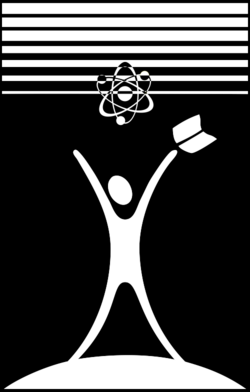
കേരള ശാസ്ത്ര സാഹിത്യ പരിഷത്ത്
ശാസ്ത്രം ജനനന്മയ്ക്ക് ശാസ്ത്രം സാമൂഹ്യവിപ്ലവത്തിന്
Editorial Team · എഡിറ്റോറിയൽ ടീം
Azad Nikarthil
Dr. Raseena N R
Yadhunath V
Aswathi R S
Abhijith R
V K Jay Somanadhan
Abhijith K A
Abhiram KTK
Sreenath
AI Assistance: Claude (Anthropic)
← എല്ലാ ലക്കങ്ങളും · All issues